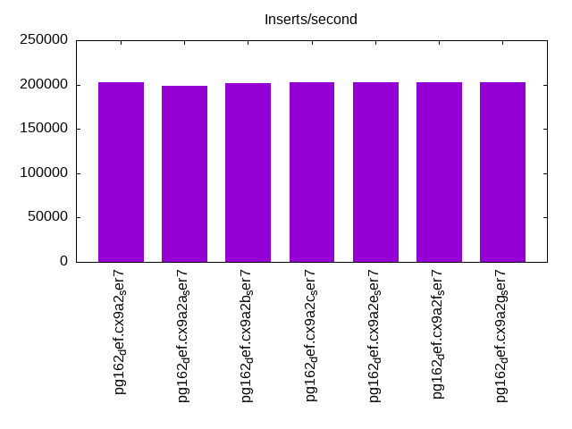
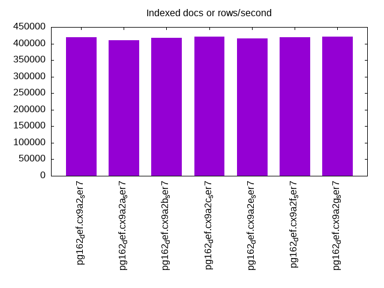
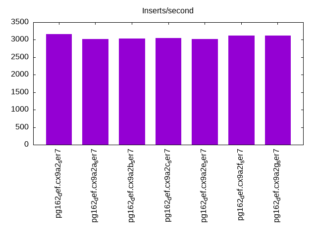
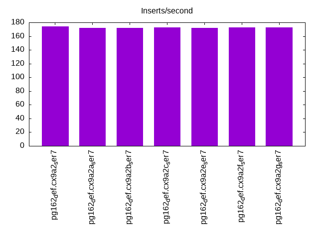
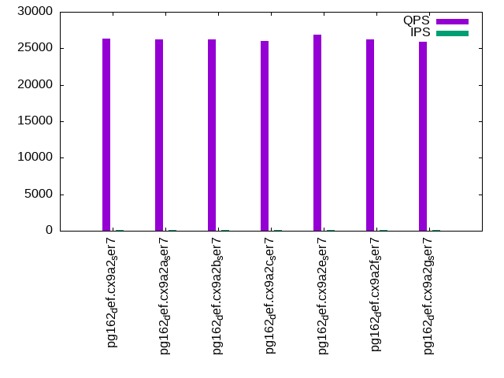
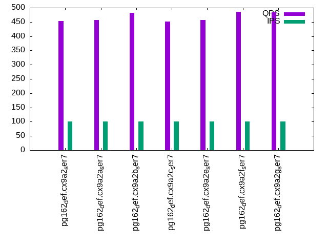
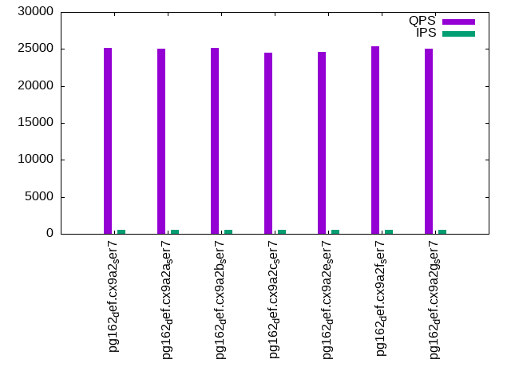
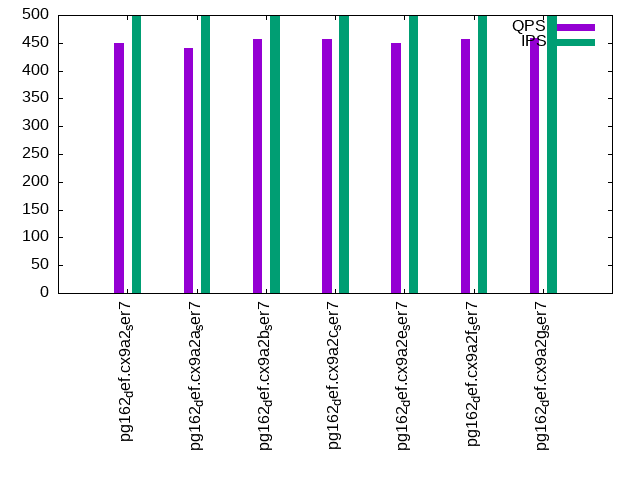
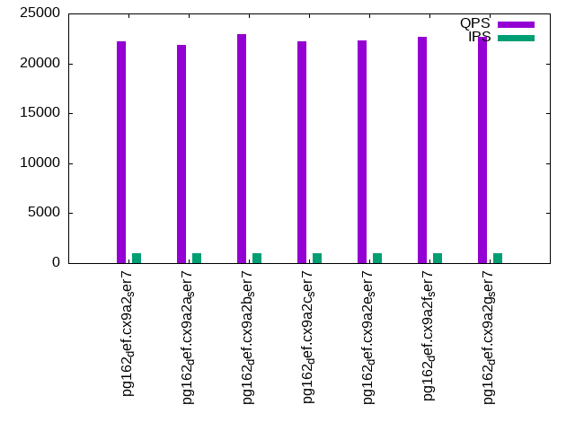
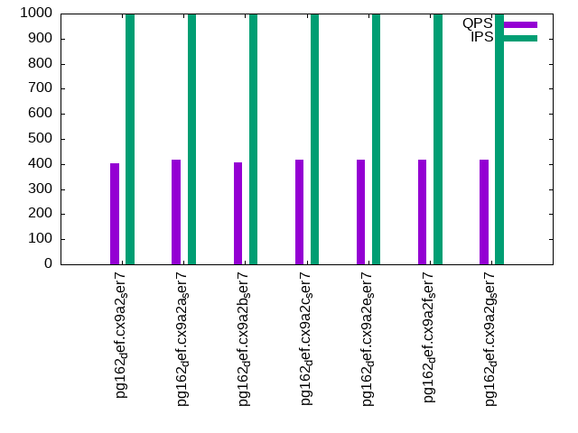

This is a report for the insert benchmark with 800M docs and 1 client(s). It is generated by scripts (bash, awk, sed) and Tufte might not be impressed. An overview of the insert benchmark is here and a short update is here. Below, by DBMS, I mean DBMS+version.config. An example is my8020.c10b40 where my means MySQL, 8020 is version 8.0.20 and c10b40 is the name for the configuration file.
The test server has 8 AMD cores, 32G RAM and an NVMe SSD. It is described here as the SER7 The benchmark was run with 1 client and there were 1 or 3 connections per client (1 for queries or inserts without rate limits, 1+1 for rate limited inserts+deletes). It uses 1 table. It loads 800M rows per table without secondary indexes, creates 3 secondary indexes per table, then inserts 4m+1m rows per table with a delete per insert to avoid growing the table. It then does 6 read+write tests for 1800s each that do queries as fast as possible with 100,100,500,500,1000,1000 inserts/s and the same for deletes/s per client concurrent with the queries. The database is larger than memory. Clients and the DBMS share one server. The per-database configs are in the per-database subdirectories here.
The tested DBMS are:
The numbers are inserts/s for l.i0, l.i1 and l.i2, indexed docs (or rows) /s for l.x and queries/s for qr100, qp100 thru qr1000, qp1000" The values are the average rate over the entire test for inserts (IPS) and queries (QPS). The range of values for IPS and QPS is split into 3 parts: bottom 25%, middle 50%, top 25%. Values in the bottom 25% have a red background, values in the top 25% have a green background and values in the middle have no color. A gray background is used for values that can be ignored because the DBMS did not sustain the target insert rate. Red backgrounds are not used when the minimum value is within 80% of the max value.
| dbms | l.i0 | l.x | l.i1 | l.i2 | qr100 | qp100 | qr500 | qp500 | qr1000 | qp1000 |
|---|---|---|---|---|---|---|---|---|---|---|
| pg162_def.cx9a2_ser7 | 202994 | 419068 | 3162 | 174 | 26367 | 454 | 25170 | 450 | 22184 | 404 |
| pg162_def.cx9a2a_ser7 | 198758 | 409836 | 3021 | 172 | 26274 | 456 | 24985 | 440 | 21823 | 419 |
| pg162_def.cx9a2b_ser7 | 201765 | 417536 | 3040 | 172 | 26255 | 482 | 25092 | 457 | 22919 | 407 |
| pg162_def.cx9a2c_ser7 | 202737 | 420389 | 3051 | 173 | 25995 | 452 | 24488 | 456 | 22170 | 419 |
| pg162_def.cx9a2e_ser7 | 202122 | 415584 | 3021 | 172 | 26924 | 456 | 24651 | 449 | 22277 | 417 |
| pg162_def.cx9a2f_ser7 | 202891 | 419948 | 3120 | 173 | 26259 | 485 | 25322 | 457 | 22706 | 418 |
| pg162_def.cx9a2g_ser7 | 202686 | 420610 | 3120 | 173 | 25926 | 483 | 25008 | 458 | 22703 | 417 |
This table has relative throughput, throughput for the DBMS relative to the DBMS in the first line, using the absolute throughput from the previous table. Values less than 0.95 have a yellow background. Values greater than 1.05 have a blue background.
| dbms | l.i0 | l.x | l.i1 | l.i2 | qr100 | qp100 | qr500 | qp500 | qr1000 | qp1000 |
|---|---|---|---|---|---|---|---|---|---|---|
| pg162_def.cx9a2_ser7 | 1.00 | 1.00 | 1.00 | 1.00 | 1.00 | 1.00 | 1.00 | 1.00 | 1.00 | 1.00 |
| pg162_def.cx9a2a_ser7 | 0.98 | 0.98 | 0.96 | 0.99 | 1.00 | 1.00 | 0.99 | 0.98 | 0.98 | 1.04 |
| pg162_def.cx9a2b_ser7 | 0.99 | 1.00 | 0.96 | 0.99 | 1.00 | 1.06 | 1.00 | 1.02 | 1.03 | 1.01 |
| pg162_def.cx9a2c_ser7 | 1.00 | 1.00 | 0.96 | 0.99 | 0.99 | 1.00 | 0.97 | 1.01 | 1.00 | 1.04 |
| pg162_def.cx9a2e_ser7 | 1.00 | 0.99 | 0.96 | 0.99 | 1.02 | 1.00 | 0.98 | 1.00 | 1.00 | 1.03 |
| pg162_def.cx9a2f_ser7 | 1.00 | 1.00 | 0.99 | 0.99 | 1.00 | 1.07 | 1.01 | 1.02 | 1.02 | 1.03 |
| pg162_def.cx9a2g_ser7 | 1.00 | 1.00 | 0.99 | 0.99 | 0.98 | 1.06 | 0.99 | 1.02 | 1.02 | 1.03 |
This lists the average rate of inserts/s for the tests that do inserts concurrent with queries. For such tests the query rate is listed in the table above. The read+write tests are setup so that the insert rate should match the target rate every second. Cells that are not at least 95% of the target have a red background to indicate a failure to satisfy the target.
| dbms | qr100.L1 | qp100.L2 | qr500.L3 | qp500.L4 | qr1000.L5 | qp1000.L6 |
|---|---|---|---|---|---|---|
| pg162_def.cx9a2_ser7 | 100 | 100 | 499 | 499 | 982 | 998 |
| pg162_def.cx9a2a_ser7 | 100 | 100 | 499 | 499 | 992 | 999 |
| pg162_def.cx9a2b_ser7 | 100 | 100 | 499 | 499 | 998 | 998 |
| pg162_def.cx9a2c_ser7 | 100 | 100 | 499 | 499 | 998 | 998 |
| pg162_def.cx9a2e_ser7 | 100 | 100 | 499 | 499 | 989 | 999 |
| pg162_def.cx9a2f_ser7 | 100 | 100 | 499 | 499 | 998 | 999 |
| pg162_def.cx9a2g_ser7 | 100 | 100 | 499 | 499 | 998 | 999 |
| target | 100 | 100 | 500 | 500 | 1000 | 1000 |
l.i0: load without secondary indexes. Graphs for performance per 1-second interval are here.
Average throughput:
Insert response time histogram: each cell has the percentage of responses that take <= the time in the header and max is the max response time in seconds. For the max column values in the top 25% of the range have a red background and in the bottom 25% of the range have a green background. The red background is not used when the min value is within 80% of the max value.
| dbms | 256us | 1ms | 4ms | 16ms | 64ms | 256ms | 1s | 4s | 16s | gt | max |
|---|---|---|---|---|---|---|---|---|---|---|---|
| pg162_def.cx9a2_ser7 | 99.969 | 0.028 | 0.002 | 0.001 | nonzero | 0.097 | |||||
| pg162_def.cx9a2a_ser7 | 99.942 | 0.052 | 0.003 | 0.002 | nonzero | 0.143 | |||||
| pg162_def.cx9a2b_ser7 | 99.942 | 0.052 | 0.003 | 0.003 | nonzero | 0.133 | |||||
| pg162_def.cx9a2c_ser7 | 99.947 | 0.049 | 0.002 | 0.002 | nonzero | 0.134 | |||||
| pg162_def.cx9a2e_ser7 | 99.925 | 0.069 | 0.003 | 0.003 | nonzero | 0.115 | |||||
| pg162_def.cx9a2f_ser7 | 99.979 | 0.020 | 0.001 | 0.001 | 0.064 | ||||||
| pg162_def.cx9a2g_ser7 | 99.957 | 0.037 | 0.003 | 0.002 | nonzero | 0.096 |
Performance metrics for the DBMS listed above. Some are normalized by throughput, others are not. Legend for results is here.
ips qps rps rmbps wps wmbps rpq rkbpq wpi wkbpi csps cpups cspq cpupq dbgb1 dbgb2 rss maxop p50 p99 tag 202994 0 34 0.3 289.0 83.5 0.000 0.001 0.001 0.421 24432 11.4 0.120 4 76.5 116.6 18.4 0.097 201956 191689 pg162_def.cx9a2_ser7 198758 0 36 0.3 278.4 81.8 0.000 0.001 0.001 0.421 23534 11.4 0.118 5 76.5 116.6 18.6 0.143 197376 188290 pg162_def.cx9a2a_ser7 201765 0 37 0.3 285.6 83.0 0.000 0.001 0.001 0.421 23817 11.4 0.118 5 76.5 116.6 18.9 0.133 200639 188785 pg162_def.cx9a2b_ser7 202737 0 36 0.3 291.9 83.2 0.000 0.001 0.001 0.420 23985 11.7 0.118 5 76.5 116.6 2.0 0.134 201581 191685 pg162_def.cx9a2c_ser7 202122 0 35 0.3 289.2 83.8 0.000 0.001 0.001 0.424 23693 11.5 0.117 5 76.5 116.6 0.9 0.115 200983 191086 pg162_def.cx9a2e_ser7 202891 0 33 0.3 285.2 82.5 0.000 0.001 0.001 0.416 23934 11.5 0.118 5 76.5 116.6 18.6 0.064 201175 191589 pg162_def.cx9a2f_ser7 202686 0 38 0.3 286.5 83.4 0.000 0.002 0.001 0.422 24168 11.4 0.119 4 76.5 116.6 20.0 0.096 201482 191896 pg162_def.cx9a2g_ser7
l.x: create secondary indexes.
Average throughput:
Performance metrics for the DBMS listed above. Some are normalized by throughput, others are not. Legend for results is here.
ips qps rps rmbps wps wmbps rpq rkbpq wpi wkbpi csps cpups cspq cpupq dbgb1 dbgb2 rss maxop p50 p99 tag 419068 0 1491 141.4 411.7 157.4 0.004 0.345 0.001 0.385 1541 6.4 0.004 1 153.6 193.7 22.0 0.003 NA NA pg162_def.cx9a2_ser7 409836 0 1450 138.2 404.1 154.7 0.004 0.345 0.001 0.387 1501 6.3 0.004 1 153.6 193.7 22.7 0.005 NA NA pg162_def.cx9a2a_ser7 417536 0 1472 140.8 413.7 156.9 0.004 0.345 0.001 0.385 1533 6.4 0.004 1 153.6 193.7 21.9 0.008 NA NA pg162_def.cx9a2b_ser7 420389 0 1489 141.7 412.5 157.6 0.004 0.345 0.001 0.384 1610 6.5 0.004 1 153.6 193.7 22.8 0.005 NA NA pg162_def.cx9a2c_ser7 415584 0 1468 140.1 404.8 155.2 0.004 0.345 0.001 0.382 1498 6.4 0.004 1 153.6 193.7 21.7 0.006 NA NA pg162_def.cx9a2e_ser7 419948 0 1478 141.6 411.1 157.6 0.004 0.345 0.001 0.384 1512 6.4 0.004 1 153.6 193.7 22.3 0.006 NA NA pg162_def.cx9a2f_ser7 420610 0 1486 141.9 413.1 158.1 0.004 0.345 0.001 0.385 1543 6.4 0.004 1 153.6 193.7 22.6 0.005 NA NA pg162_def.cx9a2g_ser7
l.i1: continue load after secondary indexes created with 50 inserts per transaction. Graphs for performance per 1-second interval are here.
Average throughput:
Insert response time histogram: each cell has the percentage of responses that take <= the time in the header and max is the max response time in seconds. For the max column values in the top 25% of the range have a red background and in the bottom 25% of the range have a green background. The red background is not used when the min value is within 80% of the max value.
| dbms | 256us | 1ms | 4ms | 16ms | 64ms | 256ms | 1s | 4s | 16s | gt | max |
|---|---|---|---|---|---|---|---|---|---|---|---|
| pg162_def.cx9a2_ser7 | 92.570 | 7.053 | 0.376 | 0.001 | 0.328 | ||||||
| pg162_def.cx9a2a_ser7 | 88.314 | 11.271 | 0.414 | 0.001 | 0.280 | ||||||
| pg162_def.cx9a2b_ser7 | 93.528 | 6.058 | 0.409 | 0.006 | 0.367 | ||||||
| pg162_def.cx9a2c_ser7 | 92.183 | 7.462 | 0.354 | 0.001 | 0.258 | ||||||
| pg162_def.cx9a2e_ser7 | 90.991 | 8.616 | 0.392 | 0.193 | |||||||
| pg162_def.cx9a2f_ser7 | 94.883 | 5.100 | 0.017 | 0.116 | |||||||
| pg162_def.cx9a2g_ser7 | 95.055 | 4.936 | 0.009 | 0.120 |
Delete response time histogram: each cell has the percentage of responses that take <= the time in the header and max is the max response time in seconds. For the max column values in the top 25% of the range have a red background and in the bottom 25% of the range have a green background. The red background is not used when the min value is within 80% of the max value.
| dbms | 256us | 1ms | 4ms | 16ms | 64ms | 256ms | 1s | 4s | 16s | gt | max |
|---|---|---|---|---|---|---|---|---|---|---|---|
| pg162_def.cx9a2_ser7 | 0.001 | 1.219 | 10.904 | 49.655 | 38.221 | 0.040 | |||||
| pg162_def.cx9a2a_ser7 | 0.006 | 1.354 | 10.203 | 52.163 | 36.275 | 0.037 | |||||
| pg162_def.cx9a2b_ser7 | 0.004 | 1.278 | 12.568 | 49.119 | 37.032 | 0.038 | |||||
| pg162_def.cx9a2c_ser7 | 0.004 | 1.320 | 10.464 | 51.614 | 36.599 | 0.052 | |||||
| pg162_def.cx9a2e_ser7 | 0.004 | 1.239 | 10.505 | 51.515 | 36.737 | 0.039 | |||||
| pg162_def.cx9a2f_ser7 | 0.004 | 1.862 | 10.046 | 52.036 | 36.051 | 0.030 | |||||
| pg162_def.cx9a2g_ser7 | 0.004 | 1.275 | 10.600 | 52.431 | 35.690 | 0.043 |
Performance metrics for the DBMS listed above. Some are normalized by throughput, others are not. Legend for results is here.
ips qps rps rmbps wps wmbps rpq rkbpq wpi wkbpi csps cpups cspq cpupq dbgb1 dbgb2 rss maxop p50 p99 tag 3162 0 4543 36.2 3514.4 63.8 1.437 11.729 1.111 20.667 11422 7.6 3.612 192 154.3 194.3 20.0 0.328 2798 649 pg162_def.cx9a2_ser7 3021 0 4352 34.7 3421.5 62.1 1.441 11.761 1.133 21.050 11117 7.4 3.680 196 154.3 194.3 14.3 0.280 2997 649 pg162_def.cx9a2a_ser7 3040 0 4371 34.8 3409.8 61.7 1.438 11.736 1.122 20.792 11115 7.3 3.657 192 154.3 194.3 19.4 0.367 3046 549 pg162_def.cx9a2b_ser7 3051 0 4388 35.0 3436.1 62.3 1.438 11.732 1.126 20.914 11244 7.6 3.685 199 154.3 194.3 19.9 0.258 3047 649 pg162_def.cx9a2c_ser7 3021 0 4349 34.6 3370.0 60.9 1.440 11.744 1.115 20.634 11115 7.3 3.679 193 154.3 194.3 20.6 0.193 3000 649 pg162_def.cx9a2e_ser7 3120 0 4513 36.0 3593.4 65.2 1.447 11.807 1.152 21.395 11455 7.6 3.671 195 154.3 194.3 14.2 0.116 3097 1897 pg162_def.cx9a2f_ser7 3120 0 4488 35.6 3554.0 69.1 1.438 11.683 1.139 22.674 11485 7.8 3.681 200 154.3 194.3 16.6 0.120 3097 1897 pg162_def.cx9a2g_ser7
l.i2: continue load after secondary indexes created with 5 inserts per transaction. Graphs for performance per 1-second interval are here.
Average throughput:
Insert response time histogram: each cell has the percentage of responses that take <= the time in the header and max is the max response time in seconds. For the max column values in the top 25% of the range have a red background and in the bottom 25% of the range have a green background. The red background is not used when the min value is within 80% of the max value.
| dbms | 256us | 1ms | 4ms | 16ms | 64ms | 256ms | 1s | 4s | 16s | gt | max |
|---|---|---|---|---|---|---|---|---|---|---|---|
| pg162_def.cx9a2_ser7 | 1.966 | 93.493 | 4.449 | 0.091 | 0.001 | 0.085 | |||||
| pg162_def.cx9a2a_ser7 | 1.125 | 94.269 | 4.535 | 0.072 | 0.001 | 0.080 | |||||
| pg162_def.cx9a2b_ser7 | 0.953 | 94.582 | 4.388 | 0.076 | 0.001 | 0.092 | |||||
| pg162_def.cx9a2c_ser7 | 1.004 | 95.304 | 3.656 | 0.034 | 0.001 | 0.127 | |||||
| pg162_def.cx9a2e_ser7 | 1.372 | 95.374 | 3.226 | 0.025 | 0.003 | 0.127 | |||||
| pg162_def.cx9a2f_ser7 | 1.065 | 96.141 | 2.779 | 0.014 | 0.002 | 0.073 | |||||
| pg162_def.cx9a2g_ser7 | 1.295 | 95.868 | 2.825 | 0.011 | 0.001 | 0.110 |
Delete response time histogram: each cell has the percentage of responses that take <= the time in the header and max is the max response time in seconds. For the max column values in the top 25% of the range have a red background and in the bottom 25% of the range have a green background. The red background is not used when the min value is within 80% of the max value.
| dbms | 256us | 1ms | 4ms | 16ms | 64ms | 256ms | 1s | 4s | 16s | gt | max |
|---|---|---|---|---|---|---|---|---|---|---|---|
| pg162_def.cx9a2_ser7 | 99.999 | 0.001 | 0.092 | ||||||||
| pg162_def.cx9a2a_ser7 | 99.999 | 0.001 | 0.090 | ||||||||
| pg162_def.cx9a2b_ser7 | 99.999 | 0.001 | 0.091 | ||||||||
| pg162_def.cx9a2c_ser7 | 99.999 | 0.001 | 0.091 | ||||||||
| pg162_def.cx9a2e_ser7 | 99.999 | 0.001 | 0.091 | ||||||||
| pg162_def.cx9a2f_ser7 | 99.999 | 0.001 | 0.091 | ||||||||
| pg162_def.cx9a2g_ser7 | 99.999 | 0.001 | 0.089 |
Performance metrics for the DBMS listed above. Some are normalized by throughput, others are not. Legend for results is here.
ips qps rps rmbps wps wmbps rpq rkbpq wpi wkbpi csps cpups cspq cpupq dbgb1 dbgb2 rss maxop p50 p99 tag 174 0 186 1.5 487.9 7.0 1.072 8.744 2.810 41.143 1484 5.9 8.550 2719 154.4 194.5 22.0 0.085 175 155 pg162_def.cx9a2_ser7 172 0 185 1.5 481.3 6.9 1.075 8.770 2.795 41.061 1496 5.9 8.688 2741 154.4 194.5 22.0 0.080 170 155 pg162_def.cx9a2a_ser7 172 0 185 1.5 484.6 6.9 1.073 8.750 2.809 41.256 1493 5.9 8.656 2736 154.4 194.5 22.1 0.092 170 155 pg162_def.cx9a2b_ser7 173 0 186 1.5 485.1 7.0 1.073 8.751 2.799 41.070 1603 6.4 9.251 2954 154.4 194.5 21.9 0.127 170 155 pg162_def.cx9a2c_ser7 172 0 185 1.5 486.5 7.0 1.072 8.748 2.822 41.502 1483 5.9 8.605 2738 154.4 194.5 22.1 0.127 170 155 pg162_def.cx9a2e_ser7 173 0 186 1.5 472.6 6.8 1.072 8.743 2.730 40.193 1501 5.9 8.671 2727 154.4 194.4 13.8 0.073 175 155 pg162_def.cx9a2f_ser7 173 0 185 1.5 484.5 7.1 1.073 8.755 2.804 41.909 1427 6.0 8.261 2778 154.4 192.1 20.6 0.110 170 155 pg162_def.cx9a2g_ser7
qr100.L1: range queries with 100 insert/s per client. Graphs for performance per 1-second interval are here.
Average throughput:
Query response time histogram: each cell has the percentage of responses that take <= the time in the header and max is the max response time in seconds. For max values in the top 25% of the range have a red background and in the bottom 25% of the range have a green background. The red background is not used when the min value is within 80% of the max value.
| dbms | 256us | 1ms | 4ms | 16ms | 64ms | 256ms | 1s | 4s | 16s | gt | max |
|---|---|---|---|---|---|---|---|---|---|---|---|
| pg162_def.cx9a2_ser7 | 99.993 | 0.007 | nonzero | nonzero | 0.010 | ||||||
| pg162_def.cx9a2a_ser7 | 99.991 | 0.008 | nonzero | nonzero | 0.010 | ||||||
| pg162_def.cx9a2b_ser7 | 99.992 | 0.008 | nonzero | nonzero | 0.010 | ||||||
| pg162_def.cx9a2c_ser7 | 99.992 | 0.007 | nonzero | nonzero | 0.010 | ||||||
| pg162_def.cx9a2e_ser7 | 99.992 | 0.008 | nonzero | nonzero | 0.010 | ||||||
| pg162_def.cx9a2f_ser7 | 99.992 | 0.008 | nonzero | nonzero | 0.010 | ||||||
| pg162_def.cx9a2g_ser7 | 99.993 | 0.007 | nonzero | nonzero | 0.010 |
Insert response time histogram: each cell has the percentage of responses that take <= the time in the header and max is the max response time in seconds. For max values in the top 25% of the range have a red background and in the bottom 25% of the range have a green background. The red background is not used when the min value is within 80% of the max value.
| dbms | 256us | 1ms | 4ms | 16ms | 64ms | 256ms | 1s | 4s | 16s | gt | max |
|---|---|---|---|---|---|---|---|---|---|---|---|
| pg162_def.cx9a2_ser7 | 55.250 | 44.750 | 0.024 | ||||||||
| pg162_def.cx9a2a_ser7 | 54.722 | 45.278 | 0.034 | ||||||||
| pg162_def.cx9a2b_ser7 | 55.250 | 44.750 | 0.027 | ||||||||
| pg162_def.cx9a2c_ser7 | 55.250 | 44.750 | 0.028 | ||||||||
| pg162_def.cx9a2e_ser7 | 55.417 | 44.583 | 0.034 | ||||||||
| pg162_def.cx9a2f_ser7 | 56.083 | 43.917 | 0.024 | ||||||||
| pg162_def.cx9a2g_ser7 | 55.556 | 44.444 | 0.023 |
Delete response time histogram: each cell has the percentage of responses that take <= the time in the header and max is the max response time in seconds. For max values in the top 25% of the range have a red background and in the bottom 25% of the range have a green background. The red background is not used when the min value is within 80% of the max value.
| dbms | 256us | 1ms | 4ms | 16ms | 64ms | 256ms | 1s | 4s | 16s | gt | max |
|---|---|---|---|---|---|---|---|---|---|---|---|
| pg162_def.cx9a2_ser7 | 0.028 | 43.750 | 56.139 | 0.083 | 0.010 | ||||||
| pg162_def.cx9a2a_ser7 | 0.194 | 45.722 | 53.944 | 0.139 | 0.010 | ||||||
| pg162_def.cx9a2b_ser7 | 0.139 | 48.750 | 51.028 | 0.083 | 0.010 | ||||||
| pg162_def.cx9a2c_ser7 | 0.056 | 49.806 | 50.028 | 0.111 | 0.009 | ||||||
| pg162_def.cx9a2e_ser7 | 0.278 | 55.083 | 44.528 | 0.111 | 0.010 | ||||||
| pg162_def.cx9a2f_ser7 | 0.083 | 47.222 | 52.583 | 0.111 | 0.010 | ||||||
| pg162_def.cx9a2g_ser7 | 0.194 | 44.194 | 55.528 | 0.083 | 0.009 |
Performance metrics for the DBMS listed above. Some are normalized by throughput, others are not. Legend for results is here.
ips qps rps rmbps wps wmbps rpq rkbpq wpi wkbpi csps cpups cspq cpupq dbgb1 dbgb2 rss maxop p50 p99 tag 100 26367 111 0.9 30.7 1.7 0.004 0.036 0.307 17.011 100928 4.7 3.828 14 154.5 192.7 23.1 0.010 26626 19770 pg162_def.cx9a2_ser7 100 26274 111 0.9 28.1 1.6 0.004 0.035 0.282 16.809 100627 4.1 3.830 12 154.5 193.3 23.0 0.010 26986 19866 pg162_def.cx9a2a_ser7 100 26255 112 0.9 29.8 1.7 0.004 0.035 0.298 16.943 100518 5.3 3.828 16 154.5 192.3 23.1 0.010 26994 19467 pg162_def.cx9a2b_ser7 100 25995 111 0.9 31.5 1.7 0.004 0.035 0.315 17.073 99623 4.5 3.832 14 154.5 191.8 23.1 0.010 26341 19676 pg162_def.cx9a2c_ser7 100 26924 111 0.9 31.4 1.7 0.004 0.034 0.315 17.086 103066 4.5 3.828 13 154.5 191.9 23.0 0.010 27205 19833 pg162_def.cx9a2e_ser7 100 26259 111 0.9 32.3 1.7 0.004 0.036 0.324 17.140 100511 4.1 3.828 12 154.5 191.3 23.0 0.010 26824 20201 pg162_def.cx9a2f_ser7 100 25926 111 0.9 33.6 1.7 0.004 0.035 0.337 17.275 99308 4.1 3.830 13 154.5 189.8 22.9 0.010 26847 20277 pg162_def.cx9a2g_ser7
qp100.L2: point queries with 100 insert/s per client. Graphs for performance per 1-second interval are here.
Average throughput:
Query response time histogram: each cell has the percentage of responses that take <= the time in the header and max is the max response time in seconds. For max values in the top 25% of the range have a red background and in the bottom 25% of the range have a green background. The red background is not used when the min value is within 80% of the max value.
| dbms | 256us | 1ms | 4ms | 16ms | 64ms | 256ms | 1s | 4s | 16s | gt | max |
|---|---|---|---|---|---|---|---|---|---|---|---|
| pg162_def.cx9a2_ser7 | 0.368 | 97.661 | 1.739 | 0.231 | 0.001 | 0.248 | |||||
| pg162_def.cx9a2a_ser7 | 0.356 | 97.658 | 1.840 | 0.145 | 0.001 | nonzero | 0.338 | ||||
| pg162_def.cx9a2b_ser7 | 0.356 | 99.242 | 0.396 | 0.006 | 0.033 | ||||||
| pg162_def.cx9a2c_ser7 | 0.336 | 97.612 | 1.891 | 0.160 | 0.001 | 0.103 | |||||
| pg162_def.cx9a2e_ser7 | 0.358 | 98.155 | 1.263 | 0.221 | 0.004 | nonzero | 0.305 | ||||
| pg162_def.cx9a2f_ser7 | 0.360 | 99.549 | 0.090 | nonzero | 0.048 | ||||||
| pg162_def.cx9a2g_ser7 | 0.327 | 99.598 | 0.074 | nonzero | 0.017 |
Insert response time histogram: each cell has the percentage of responses that take <= the time in the header and max is the max response time in seconds. For max values in the top 25% of the range have a red background and in the bottom 25% of the range have a green background. The red background is not used when the min value is within 80% of the max value.
| dbms | 256us | 1ms | 4ms | 16ms | 64ms | 256ms | 1s | 4s | 16s | gt | max |
|---|---|---|---|---|---|---|---|---|---|---|---|
| pg162_def.cx9a2_ser7 | 82.972 | 12.667 | 4.361 | 0.241 | |||||||
| pg162_def.cx9a2a_ser7 | 83.889 | 12.083 | 4.000 | 0.028 | 0.291 | ||||||
| pg162_def.cx9a2b_ser7 | 90.361 | 9.611 | 0.028 | 0.065 | |||||||
| pg162_def.cx9a2c_ser7 | 82.889 | 12.833 | 4.278 | 0.207 | |||||||
| pg162_def.cx9a2e_ser7 | 85.389 | 9.722 | 4.722 | 0.167 | 0.323 | ||||||
| pg162_def.cx9a2f_ser7 | 93.139 | 6.833 | 0.028 | 0.073 | |||||||
| pg162_def.cx9a2g_ser7 | 94.194 | 5.806 | 0.036 |
Delete response time histogram: each cell has the percentage of responses that take <= the time in the header and max is the max response time in seconds. For max values in the top 25% of the range have a red background and in the bottom 25% of the range have a green background. The red background is not used when the min value is within 80% of the max value.
| dbms | 256us | 1ms | 4ms | 16ms | 64ms | 256ms | 1s | 4s | 16s | gt | max |
|---|---|---|---|---|---|---|---|---|---|---|---|
| pg162_def.cx9a2_ser7 | 0.111 | 44.500 | 54.528 | 0.861 | 0.013 | ||||||
| pg162_def.cx9a2a_ser7 | 0.222 | 42.278 | 56.639 | 0.861 | 0.012 | ||||||
| pg162_def.cx9a2b_ser7 | 0.083 | 43.194 | 56.667 | 0.056 | 0.007 | ||||||
| pg162_def.cx9a2c_ser7 | 0.111 | 40.861 | 58.611 | 0.417 | 0.012 | ||||||
| pg162_def.cx9a2e_ser7 | 0.111 | 38.861 | 60.278 | 0.750 | 0.012 | ||||||
| pg162_def.cx9a2f_ser7 | 0.389 | 41.111 | 58.500 | 0.003 | |||||||
| pg162_def.cx9a2g_ser7 | 0.167 | 46.083 | 53.694 | 0.056 | 0.010 |
Performance metrics for the DBMS listed above. Some are normalized by throughput, others are not. Legend for results is here.
ips qps rps rmbps wps wmbps rpq rkbpq wpi wkbpi csps cpups cspq cpupq dbgb1 dbgb2 rss maxop p50 p99 tag 100 454 6050 47.5 187.5 2.9 13.340 107.240 1.881 29.440 14539 1.9 32.059 335 154.5 190.5 22.9 0.248 495 64 pg162_def.cx9a2_ser7 100 456 6078 47.7 189.0 2.9 13.341 107.264 1.894 29.546 14564 1.8 31.967 316 154.5 190.6 22.8 0.338 495 112 pg162_def.cx9a2a_ser7 100 482 6385 50.1 188.6 2.9 13.258 106.579 1.890 29.520 15335 2.1 31.843 349 154.5 190.4 22.9 0.033 496 304 pg162_def.cx9a2b_ser7 100 452 6030 47.3 188.7 2.9 13.342 107.263 1.891 29.533 14586 2.0 32.269 354 154.5 190.3 22.9 0.103 495 112 pg162_def.cx9a2c_ser7 100 456 6081 47.8 188.7 2.9 13.331 107.202 1.891 29.521 14575 1.9 31.948 333 154.5 190.3 22.8 0.305 495 48 pg162_def.cx9a2e_ser7 100 485 6429 50.5 189.0 2.9 13.248 106.521 1.894 29.546 15399 2.0 31.731 330 154.5 190.1 22.8 0.048 511 352 pg162_def.cx9a2f_ser7 100 483 6399 50.2 188.8 2.9 13.256 106.561 1.892 29.535 15442 2.0 31.991 331 154.5 189.8 22.7 0.017 496 352 pg162_def.cx9a2g_ser7
qr500.L3: range queries with 500 insert/s per client. Graphs for performance per 1-second interval are here.
Average throughput:
Query response time histogram: each cell has the percentage of responses that take <= the time in the header and max is the max response time in seconds. For max values in the top 25% of the range have a red background and in the bottom 25% of the range have a green background. The red background is not used when the min value is within 80% of the max value.
| dbms | 256us | 1ms | 4ms | 16ms | 64ms | 256ms | 1s | 4s | 16s | gt | max |
|---|---|---|---|---|---|---|---|---|---|---|---|
| pg162_def.cx9a2_ser7 | 99.987 | 0.013 | nonzero | nonzero | 0.011 | ||||||
| pg162_def.cx9a2a_ser7 | 99.984 | 0.015 | nonzero | nonzero | 0.012 | ||||||
| pg162_def.cx9a2b_ser7 | 99.986 | 0.014 | nonzero | nonzero | 0.011 | ||||||
| pg162_def.cx9a2c_ser7 | 99.984 | 0.016 | nonzero | nonzero | 0.010 | ||||||
| pg162_def.cx9a2e_ser7 | 99.985 | 0.015 | nonzero | nonzero | 0.011 | ||||||
| pg162_def.cx9a2f_ser7 | 99.987 | 0.013 | nonzero | nonzero | 0.010 | ||||||
| pg162_def.cx9a2g_ser7 | 99.987 | 0.013 | nonzero | nonzero | 0.011 |
Insert response time histogram: each cell has the percentage of responses that take <= the time in the header and max is the max response time in seconds. For max values in the top 25% of the range have a red background and in the bottom 25% of the range have a green background. The red background is not used when the min value is within 80% of the max value.
| dbms | 256us | 1ms | 4ms | 16ms | 64ms | 256ms | 1s | 4s | 16s | gt | max |
|---|---|---|---|---|---|---|---|---|---|---|---|
| pg162_def.cx9a2_ser7 | 82.506 | 15.061 | 2.433 | 0.187 | |||||||
| pg162_def.cx9a2a_ser7 | 76.494 | 22.078 | 1.428 | 0.131 | |||||||
| pg162_def.cx9a2b_ser7 | 76.906 | 22.917 | 0.178 | 0.093 | |||||||
| pg162_def.cx9a2c_ser7 | 79.517 | 19.833 | 0.650 | 0.108 | |||||||
| pg162_def.cx9a2e_ser7 | 84.661 | 14.983 | 0.356 | 0.149 | |||||||
| pg162_def.cx9a2f_ser7 | 78.139 | 21.861 | 0.033 | ||||||||
| pg162_def.cx9a2g_ser7 | 86.550 | 13.450 | 0.029 |
Delete response time histogram: each cell has the percentage of responses that take <= the time in the header and max is the max response time in seconds. For max values in the top 25% of the range have a red background and in the bottom 25% of the range have a green background. The red background is not used when the min value is within 80% of the max value.
| dbms | 256us | 1ms | 4ms | 16ms | 64ms | 256ms | 1s | 4s | 16s | gt | max |
|---|---|---|---|---|---|---|---|---|---|---|---|
| pg162_def.cx9a2_ser7 | 0.139 | 11.950 | 52.544 | 35.361 | 0.006 | 0.017 | |||||
| pg162_def.cx9a2a_ser7 | 0.061 | 12.672 | 53.661 | 33.606 | 0.016 | ||||||
| pg162_def.cx9a2b_ser7 | 0.417 | 12.561 | 52.011 | 35.006 | 0.006 | 0.017 | |||||
| pg162_def.cx9a2c_ser7 | 0.372 | 10.111 | 53.850 | 35.661 | 0.006 | 0.018 | |||||
| pg162_def.cx9a2e_ser7 | 0.206 | 12.850 | 54.722 | 32.222 | 0.013 | ||||||
| pg162_def.cx9a2f_ser7 | 0.289 | 10.744 | 58.183 | 30.778 | 0.006 | 0.017 | |||||
| pg162_def.cx9a2g_ser7 | 0.222 | 11.811 | 52.283 | 35.683 | 0.011 |
Performance metrics for the DBMS listed above. Some are normalized by throughput, others are not. Legend for results is here.
ips qps rps rmbps wps wmbps rpq rkbpq wpi wkbpi csps cpups cspq cpupq dbgb1 dbgb2 rss maxop p50 p99 tag 499 25170 864 7.0 307.8 9.2 0.034 0.284 0.617 18.931 98249 4.9 3.903 16 154.5 185.5 10.6 0.011 25829 18755 pg162_def.cx9a2_ser7 499 24985 865 7.0 296.5 9.1 0.035 0.286 0.594 18.679 97524 5.1 3.903 16 154.5 185.7 11.4 0.012 25553 18765 pg162_def.cx9a2a_ser7 499 25092 864 7.0 280.6 9.0 0.034 0.284 0.562 18.471 97906 4.9 3.902 16 154.5 185.5 10.5 0.011 25997 19335 pg162_def.cx9a2b_ser7 499 24488 864 7.0 300.3 9.1 0.035 0.291 0.602 18.749 95751 5.3 3.910 17 154.5 185.4 10.3 0.010 25236 19018 pg162_def.cx9a2c_ser7 499 24651 864 7.0 290.8 9.0 0.035 0.290 0.583 18.554 96305 4.9 3.907 16 154.5 185.3 11.7 0.011 25221 18819 pg162_def.cx9a2e_ser7 499 25322 865 7.0 278.3 9.0 0.034 0.282 0.558 18.411 98817 4.9 3.902 15 154.5 185.2 11.1 0.010 25877 19453 pg162_def.cx9a2f_ser7 499 25008 864 7.0 280.4 9.0 0.035 0.286 0.562 18.447 97578 4.9 3.902 16 154.5 184.9 10.7 0.011 25507 18938 pg162_def.cx9a2g_ser7
qp500.L4: point queries with 500 insert/s per client. Graphs for performance per 1-second interval are here.
Average throughput:
Query response time histogram: each cell has the percentage of responses that take <= the time in the header and max is the max response time in seconds. For max values in the top 25% of the range have a red background and in the bottom 25% of the range have a green background. The red background is not used when the min value is within 80% of the max value.
| dbms | 256us | 1ms | 4ms | 16ms | 64ms | 256ms | 1s | 4s | 16s | gt | max |
|---|---|---|---|---|---|---|---|---|---|---|---|
| pg162_def.cx9a2_ser7 | 0.147 | 99.050 | 0.658 | 0.145 | nonzero | 0.079 | |||||
| pg162_def.cx9a2a_ser7 | 0.157 | 98.030 | 1.725 | 0.087 | 0.001 | 0.236 | |||||
| pg162_def.cx9a2b_ser7 | 0.132 | 99.511 | 0.357 | nonzero | 0.017 | ||||||
| pg162_def.cx9a2c_ser7 | 0.125 | 99.599 | 0.276 | nonzero | 0.017 | ||||||
| pg162_def.cx9a2e_ser7 | 0.130 | 98.937 | 0.900 | 0.033 | nonzero | 0.097 | |||||
| pg162_def.cx9a2f_ser7 | 0.129 | 99.549 | 0.322 | nonzero | 0.018 | ||||||
| pg162_def.cx9a2g_ser7 | 0.149 | 99.535 | 0.316 | 0.015 |
Insert response time histogram: each cell has the percentage of responses that take <= the time in the header and max is the max response time in seconds. For max values in the top 25% of the range have a red background and in the bottom 25% of the range have a green background. The red background is not used when the min value is within 80% of the max value.
| dbms | 256us | 1ms | 4ms | 16ms | 64ms | 256ms | 1s | 4s | 16s | gt | max |
|---|---|---|---|---|---|---|---|---|---|---|---|
| pg162_def.cx9a2_ser7 | 95.594 | 2.494 | 1.911 | 0.179 | |||||||
| pg162_def.cx9a2a_ser7 | 87.439 | 12.033 | 0.528 | 0.237 | |||||||
| pg162_def.cx9a2b_ser7 | 92.367 | 7.633 | 0.031 | ||||||||
| pg162_def.cx9a2c_ser7 | 94.156 | 5.844 | 0.036 | ||||||||
| pg162_def.cx9a2e_ser7 | 91.383 | 8.433 | 0.183 | 0.204 | |||||||
| pg162_def.cx9a2f_ser7 | 92.689 | 7.311 | 0.033 | ||||||||
| pg162_def.cx9a2g_ser7 | 93.578 | 6.422 | 0.033 |
Delete response time histogram: each cell has the percentage of responses that take <= the time in the header and max is the max response time in seconds. For max values in the top 25% of the range have a red background and in the bottom 25% of the range have a green background. The red background is not used when the min value is within 80% of the max value.
| dbms | 256us | 1ms | 4ms | 16ms | 64ms | 256ms | 1s | 4s | 16s | gt | max |
|---|---|---|---|---|---|---|---|---|---|---|---|
| pg162_def.cx9a2_ser7 | 0.133 | 14.628 | 52.344 | 32.889 | 0.006 | 0.016 | |||||
| pg162_def.cx9a2a_ser7 | 0.750 | 12.533 | 55.128 | 31.589 | 0.013 | ||||||
| pg162_def.cx9a2b_ser7 | 0.267 | 11.667 | 55.333 | 32.733 | 0.010 | ||||||
| pg162_def.cx9a2c_ser7 | 0.272 | 11.350 | 57.539 | 30.839 | 0.013 | ||||||
| pg162_def.cx9a2e_ser7 | 0.044 | 12.861 | 56.028 | 31.067 | 0.012 | ||||||
| pg162_def.cx9a2f_ser7 | 0.500 | 11.794 | 58.539 | 29.167 | 0.010 | ||||||
| pg162_def.cx9a2g_ser7 | 0.144 | 14.689 | 53.628 | 31.539 | 0.015 |
Performance metrics for the DBMS listed above. Some are normalized by throughput, others are not. Legend for results is here.
ips qps rps rmbps wps wmbps rpq rkbpq wpi wkbpi csps cpups cspq cpupq dbgb1 dbgb2 rss maxop p50 p99 tag 499 450 6868 53.9 912.2 13.7 15.245 122.517 1.827 28.154 16641 2.6 36.939 462 154.5 183.3 10.1 0.079 479 80 pg162_def.cx9a2_ser7 499 440 6744 52.9 910.7 13.6 15.310 123.060 1.824 27.896 16359 2.6 37.137 472 154.5 183.3 20.1 0.236 463 144 pg162_def.cx9a2a_ser7 499 457 6944 54.5 913.5 13.6 15.194 122.108 1.829 27.948 16900 2.7 36.981 473 154.5 183.3 19.9 0.017 463 320 pg162_def.cx9a2b_ser7 499 456 6938 54.5 913.8 13.6 15.199 122.148 1.830 27.915 16917 2.7 37.058 473 154.5 183.2 20.1 0.017 464 320 pg162_def.cx9a2c_ser7 499 449 6843 53.7 911.4 13.6 15.243 122.503 1.826 27.895 16615 2.6 37.012 463 154.5 183.2 20.1 0.097 463 160 pg162_def.cx9a2e_ser7 499 457 6941 54.5 912.9 13.6 15.202 122.172 1.829 27.961 16890 2.6 36.990 456 154.5 183.1 20.1 0.018 463 320 pg162_def.cx9a2f_ser7 499 458 6957 54.6 915.1 13.6 15.189 122.064 1.832 27.973 16911 2.6 36.923 454 154.5 183.0 19.8 0.015 464 320 pg162_def.cx9a2g_ser7
qr1000.L5: range queries with 1000 insert/s per client. Graphs for performance per 1-second interval are here.
Average throughput:
Query response time histogram: each cell has the percentage of responses that take <= the time in the header and max is the max response time in seconds. For max values in the top 25% of the range have a red background and in the bottom 25% of the range have a green background. The red background is not used when the min value is within 80% of the max value.
| dbms | 256us | 1ms | 4ms | 16ms | 64ms | 256ms | 1s | 4s | 16s | gt | max |
|---|---|---|---|---|---|---|---|---|---|---|---|
| pg162_def.cx9a2_ser7 | 99.976 | 0.023 | 0.001 | nonzero | 0.012 | ||||||
| pg162_def.cx9a2a_ser7 | 99.976 | 0.023 | nonzero | nonzero | nonzero | 0.117 | |||||
| pg162_def.cx9a2b_ser7 | 99.977 | 0.023 | nonzero | nonzero | nonzero | 0.090 | |||||
| pg162_def.cx9a2c_ser7 | 99.977 | 0.023 | nonzero | nonzero | nonzero | 0.060 | |||||
| pg162_def.cx9a2e_ser7 | 99.976 | 0.023 | nonzero | nonzero | nonzero | 0.016 | |||||
| pg162_def.cx9a2f_ser7 | 99.978 | 0.022 | nonzero | nonzero | nonzero | 0.036 | |||||
| pg162_def.cx9a2g_ser7 | 99.977 | 0.022 | nonzero | nonzero | 0.011 |
Insert response time histogram: each cell has the percentage of responses that take <= the time in the header and max is the max response time in seconds. For max values in the top 25% of the range have a red background and in the bottom 25% of the range have a green background. The red background is not used when the min value is within 80% of the max value.
| dbms | 256us | 1ms | 4ms | 16ms | 64ms | 256ms | 1s | 4s | 16s | gt | max |
|---|---|---|---|---|---|---|---|---|---|---|---|
| pg162_def.cx9a2_ser7 | 80.169 | 16.611 | 3.219 | 0.184 | |||||||
| pg162_def.cx9a2a_ser7 | 86.708 | 11.983 | 1.308 | 0.187 | |||||||
| pg162_def.cx9a2b_ser7 | 93.303 | 6.694 | 0.003 | 0.207 | |||||||
| pg162_def.cx9a2c_ser7 | 92.361 | 7.636 | 0.003 | 0.182 | |||||||
| pg162_def.cx9a2e_ser7 | 87.558 | 10.528 | 1.914 | 0.175 | |||||||
| pg162_def.cx9a2f_ser7 | 93.503 | 6.494 | 0.003 | 0.154 | |||||||
| pg162_def.cx9a2g_ser7 | 93.281 | 6.717 | 0.003 | 0.078 |
Delete response time histogram: each cell has the percentage of responses that take <= the time in the header and max is the max response time in seconds. For max values in the top 25% of the range have a red background and in the bottom 25% of the range have a green background. The red background is not used when the min value is within 80% of the max value.
| dbms | 256us | 1ms | 4ms | 16ms | 64ms | 256ms | 1s | 4s | 16s | gt | max |
|---|---|---|---|---|---|---|---|---|---|---|---|
| pg162_def.cx9a2_ser7 | 0.158 | 4.975 | 28.733 | 64.894 | 1.239 | 0.028 | |||||
| pg162_def.cx9a2a_ser7 | 0.083 | 4.864 | 25.131 | 69.908 | 0.014 | 0.018 | |||||
| pg162_def.cx9a2b_ser7 | 0.025 | 5.175 | 26.397 | 68.397 | 0.006 | 0.017 | |||||
| pg162_def.cx9a2c_ser7 | 0.125 | 4.581 | 27.706 | 67.581 | 0.008 | 0.019 | |||||
| pg162_def.cx9a2e_ser7 | 0.044 | 6.078 | 25.081 | 68.642 | 0.156 | 0.026 | |||||
| pg162_def.cx9a2f_ser7 | 0.083 | 5.058 | 26.306 | 68.544 | 0.008 | 0.018 | |||||
| pg162_def.cx9a2g_ser7 | 0.086 | 5.139 | 28.372 | 66.400 | 0.003 | 0.018 |
Performance metrics for the DBMS listed above. Some are normalized by throughput, others are not. Legend for results is here.
ips qps rps rmbps wps wmbps rpq rkbpq wpi wkbpi csps cpups cspq cpupq dbgb1 dbgb2 rss maxop p50 p99 tag 982 22184 1446 11.7 506.3 15.8 0.065 0.540 0.515 16.501 88631 6.2 3.995 22 154.5 182.3 15.8 0.012 23359 14495 pg162_def.cx9a2_ser7 992 21823 1461 11.8 462.6 15.2 0.067 0.553 0.466 15.707 87279 6.1 3.999 22 154.5 182.3 12.4 0.117 22994 14831 pg162_def.cx9a2a_ser7 998 22919 1468 11.9 475.6 15.4 0.064 0.530 0.476 15.813 91451 6.2 3.990 22 154.5 182.3 13.7 0.090 24149 14977 pg162_def.cx9a2b_ser7 998 22170 1468 11.9 456.9 15.1 0.066 0.548 0.458 15.488 88703 6.2 4.001 22 154.5 182.2 12.2 0.060 23365 14656 pg162_def.cx9a2c_ser7 989 22277 1454 11.8 469.0 15.2 0.065 0.541 0.474 15.778 88949 6.5 3.993 23 154.5 182.2 12.2 0.016 23206 14991 pg162_def.cx9a2e_ser7 998 22706 1468 11.9 467.8 15.3 0.065 0.535 0.469 15.680 90609 6.1 3.990 21 154.5 182.1 12.0 0.036 24006 14944 pg162_def.cx9a2f_ser7 998 22703 1469 11.9 472.3 15.4 0.065 0.535 0.473 15.752 90611 6.0 3.991 21 154.5 182.1 13.7 0.011 23877 15023 pg162_def.cx9a2g_ser7
qp1000.L6: point queries with 1000 insert/s per client. Graphs for performance per 1-second interval are here.
Average throughput:
Query response time histogram: each cell has the percentage of responses that take <= the time in the header and max is the max response time in seconds. For max values in the top 25% of the range have a red background and in the bottom 25% of the range have a green background. The red background is not used when the min value is within 80% of the max value.
| dbms | 256us | 1ms | 4ms | 16ms | 64ms | 256ms | 1s | 4s | 16s | gt | max |
|---|---|---|---|---|---|---|---|---|---|---|---|
| pg162_def.cx9a2_ser7 | 0.042 | 98.135 | 1.674 | 0.149 | nonzero | 0.074 | |||||
| pg162_def.cx9a2a_ser7 | 0.045 | 98.761 | 1.192 | 0.002 | 0.035 | ||||||
| pg162_def.cx9a2b_ser7 | 0.047 | 98.012 | 1.834 | 0.107 | 0.044 | ||||||
| pg162_def.cx9a2c_ser7 | 0.046 | 98.763 | 1.190 | 0.002 | 0.040 | ||||||
| pg162_def.cx9a2e_ser7 | 0.045 | 98.714 | 1.239 | 0.002 | 0.036 | ||||||
| pg162_def.cx9a2f_ser7 | 0.049 | 98.749 | 1.200 | 0.001 | 0.035 | ||||||
| pg162_def.cx9a2g_ser7 | 0.040 | 98.677 | 1.281 | 0.002 | 0.042 |
Insert response time histogram: each cell has the percentage of responses that take <= the time in the header and max is the max response time in seconds. For max values in the top 25% of the range have a red background and in the bottom 25% of the range have a green background. The red background is not used when the min value is within 80% of the max value.
| dbms | 256us | 1ms | 4ms | 16ms | 64ms | 256ms | 1s | 4s | 16s | gt | max |
|---|---|---|---|---|---|---|---|---|---|---|---|
| pg162_def.cx9a2_ser7 | 92.358 | 6.819 | 0.822 | 0.113 | |||||||
| pg162_def.cx9a2a_ser7 | 94.164 | 5.836 | 0.053 | ||||||||
| pg162_def.cx9a2b_ser7 | 91.686 | 7.633 | 0.681 | 0.189 | |||||||
| pg162_def.cx9a2c_ser7 | 95.083 | 4.914 | 0.003 | 0.309 | |||||||
| pg162_def.cx9a2e_ser7 | 94.186 | 5.814 | 0.053 | ||||||||
| pg162_def.cx9a2f_ser7 | 94.467 | 5.531 | 0.003 | 0.071 | |||||||
| pg162_def.cx9a2g_ser7 | 93.731 | 6.269 | 0.052 |
Delete response time histogram: each cell has the percentage of responses that take <= the time in the header and max is the max response time in seconds. For max values in the top 25% of the range have a red background and in the bottom 25% of the range have a green background. The red background is not used when the min value is within 80% of the max value.
| dbms | 256us | 1ms | 4ms | 16ms | 64ms | 256ms | 1s | 4s | 16s | gt | max |
|---|---|---|---|---|---|---|---|---|---|---|---|
| pg162_def.cx9a2_ser7 | 0.061 | 6.167 | 25.136 | 68.606 | 0.031 | 0.021 | |||||
| pg162_def.cx9a2a_ser7 | 0.061 | 7.211 | 25.250 | 67.475 | 0.003 | 0.019 | |||||
| pg162_def.cx9a2b_ser7 | 0.197 | 4.850 | 26.944 | 67.983 | 0.025 | 0.021 | |||||
| pg162_def.cx9a2c_ser7 | 0.147 | 5.514 | 30.100 | 64.239 | 0.014 | ||||||
| pg162_def.cx9a2e_ser7 | 0.094 | 5.472 | 27.719 | 66.714 | 0.015 | ||||||
| pg162_def.cx9a2f_ser7 | 0.147 | 4.878 | 27.825 | 67.147 | 0.003 | 0.016 | |||||
| pg162_def.cx9a2g_ser7 | 0.319 | 6.236 | 25.294 | 68.150 | 0.014 |
Performance metrics for the DBMS listed above. Some are normalized by throughput, others are not. Legend for results is here.
ips qps rps rmbps wps wmbps rpq rkbpq wpi wkbpi csps cpups cspq cpupq dbgb1 dbgb2 rss maxop p50 p99 tag 998 404 7435 58.4 1792.7 26.1 18.395 147.927 1.796 26.811 18463 3.4 45.677 673 154.6 191.7 19.8 0.074 432 112 pg162_def.cx9a2_ser7 999 419 7616 59.8 1783.5 25.9 18.193 146.330 1.786 26.510 18964 3.4 45.304 650 154.6 192.4 8.2 0.035 432 320 pg162_def.cx9a2a_ser7 998 407 7466 58.6 1784.7 25.9 18.339 147.518 1.788 26.597 18570 3.4 45.616 668 154.6 192.4 19.6 0.044 432 112 pg162_def.cx9a2b_ser7 998 419 7628 59.9 1784.2 25.8 18.197 146.352 1.787 26.486 18931 3.5 45.160 668 154.6 192.7 8.3 0.040 432 320 pg162_def.cx9a2c_ser7 999 417 7600 59.7 1783.9 25.9 18.209 146.433 1.786 26.594 18886 3.4 45.247 652 154.6 192.4 8.3 0.036 432 320 pg162_def.cx9a2e_ser7 999 418 7613 59.8 1783.1 25.9 18.195 146.337 1.785 26.574 18886 3.4 45.138 650 154.6 192.5 8.3 0.035 432 320 pg162_def.cx9a2f_ser7 999 417 7590 59.6 1785.6 26.0 18.215 146.504 1.788 26.606 18865 3.4 45.272 653 154.6 192.5 8.2 0.042 432 320 pg162_def.cx9a2g_ser7
l.i0: load without secondary indexes
Performance metrics for all DBMS, not just the ones listed above. Some are normalized by throughput, others are not. Legend for results is here.
ips qps rps rmbps wps wmbps rpq rkbpq wpi wkbpi csps cpups cspq cpupq dbgb1 dbgb2 rss maxop p50 p99 tag 202994 0 34 0.3 289.0 83.5 0.000 0.001 0.001 0.421 24432 11.4 0.120 4 76.5 116.6 18.4 0.097 201956 191689 pg162_def.cx9a2_ser7 198758 0 36 0.3 278.4 81.8 0.000 0.001 0.001 0.421 23534 11.4 0.118 5 76.5 116.6 18.6 0.143 197376 188290 pg162_def.cx9a2a_ser7 201765 0 37 0.3 285.6 83.0 0.000 0.001 0.001 0.421 23817 11.4 0.118 5 76.5 116.6 18.9 0.133 200639 188785 pg162_def.cx9a2b_ser7 202737 0 36 0.3 291.9 83.2 0.000 0.001 0.001 0.420 23985 11.7 0.118 5 76.5 116.6 2.0 0.134 201581 191685 pg162_def.cx9a2c_ser7 202122 0 35 0.3 289.2 83.8 0.000 0.001 0.001 0.424 23693 11.5 0.117 5 76.5 116.6 0.9 0.115 200983 191086 pg162_def.cx9a2e_ser7 202891 0 33 0.3 285.2 82.5 0.000 0.001 0.001 0.416 23934 11.5 0.118 5 76.5 116.6 18.6 0.064 201175 191589 pg162_def.cx9a2f_ser7 202686 0 38 0.3 286.5 83.4 0.000 0.002 0.001 0.422 24168 11.4 0.119 4 76.5 116.6 20.0 0.096 201482 191896 pg162_def.cx9a2g_ser7
l.x: create secondary indexes
Performance metrics for all DBMS, not just the ones listed above. Some are normalized by throughput, others are not. Legend for results is here.
ips qps rps rmbps wps wmbps rpq rkbpq wpi wkbpi csps cpups cspq cpupq dbgb1 dbgb2 rss maxop p50 p99 tag 419068 0 1491 141.4 411.7 157.4 0.004 0.345 0.001 0.385 1541 6.4 0.004 1 153.6 193.7 22.0 0.003 NA NA pg162_def.cx9a2_ser7 409836 0 1450 138.2 404.1 154.7 0.004 0.345 0.001 0.387 1501 6.3 0.004 1 153.6 193.7 22.7 0.005 NA NA pg162_def.cx9a2a_ser7 417536 0 1472 140.8 413.7 156.9 0.004 0.345 0.001 0.385 1533 6.4 0.004 1 153.6 193.7 21.9 0.008 NA NA pg162_def.cx9a2b_ser7 420389 0 1489 141.7 412.5 157.6 0.004 0.345 0.001 0.384 1610 6.5 0.004 1 153.6 193.7 22.8 0.005 NA NA pg162_def.cx9a2c_ser7 415584 0 1468 140.1 404.8 155.2 0.004 0.345 0.001 0.382 1498 6.4 0.004 1 153.6 193.7 21.7 0.006 NA NA pg162_def.cx9a2e_ser7 419948 0 1478 141.6 411.1 157.6 0.004 0.345 0.001 0.384 1512 6.4 0.004 1 153.6 193.7 22.3 0.006 NA NA pg162_def.cx9a2f_ser7 420610 0 1486 141.9 413.1 158.1 0.004 0.345 0.001 0.385 1543 6.4 0.004 1 153.6 193.7 22.6 0.005 NA NA pg162_def.cx9a2g_ser7
l.i1: continue load after secondary indexes created with 50 inserts per transaction
Performance metrics for all DBMS, not just the ones listed above. Some are normalized by throughput, others are not. Legend for results is here.
ips qps rps rmbps wps wmbps rpq rkbpq wpi wkbpi csps cpups cspq cpupq dbgb1 dbgb2 rss maxop p50 p99 tag 3162 0 4543 36.2 3514.4 63.8 1.437 11.729 1.111 20.667 11422 7.6 3.612 192 154.3 194.3 20.0 0.328 2798 649 pg162_def.cx9a2_ser7 3021 0 4352 34.7 3421.5 62.1 1.441 11.761 1.133 21.050 11117 7.4 3.680 196 154.3 194.3 14.3 0.280 2997 649 pg162_def.cx9a2a_ser7 3040 0 4371 34.8 3409.8 61.7 1.438 11.736 1.122 20.792 11115 7.3 3.657 192 154.3 194.3 19.4 0.367 3046 549 pg162_def.cx9a2b_ser7 3051 0 4388 35.0 3436.1 62.3 1.438 11.732 1.126 20.914 11244 7.6 3.685 199 154.3 194.3 19.9 0.258 3047 649 pg162_def.cx9a2c_ser7 3021 0 4349 34.6 3370.0 60.9 1.440 11.744 1.115 20.634 11115 7.3 3.679 193 154.3 194.3 20.6 0.193 3000 649 pg162_def.cx9a2e_ser7 3120 0 4513 36.0 3593.4 65.2 1.447 11.807 1.152 21.395 11455 7.6 3.671 195 154.3 194.3 14.2 0.116 3097 1897 pg162_def.cx9a2f_ser7 3120 0 4488 35.6 3554.0 69.1 1.438 11.683 1.139 22.674 11485 7.8 3.681 200 154.3 194.3 16.6 0.120 3097 1897 pg162_def.cx9a2g_ser7
l.i2: continue load after secondary indexes created with 5 inserts per transaction
Performance metrics for all DBMS, not just the ones listed above. Some are normalized by throughput, others are not. Legend for results is here.
ips qps rps rmbps wps wmbps rpq rkbpq wpi wkbpi csps cpups cspq cpupq dbgb1 dbgb2 rss maxop p50 p99 tag 174 0 186 1.5 487.9 7.0 1.072 8.744 2.810 41.143 1484 5.9 8.550 2719 154.4 194.5 22.0 0.085 175 155 pg162_def.cx9a2_ser7 172 0 185 1.5 481.3 6.9 1.075 8.770 2.795 41.061 1496 5.9 8.688 2741 154.4 194.5 22.0 0.080 170 155 pg162_def.cx9a2a_ser7 172 0 185 1.5 484.6 6.9 1.073 8.750 2.809 41.256 1493 5.9 8.656 2736 154.4 194.5 22.1 0.092 170 155 pg162_def.cx9a2b_ser7 173 0 186 1.5 485.1 7.0 1.073 8.751 2.799 41.070 1603 6.4 9.251 2954 154.4 194.5 21.9 0.127 170 155 pg162_def.cx9a2c_ser7 172 0 185 1.5 486.5 7.0 1.072 8.748 2.822 41.502 1483 5.9 8.605 2738 154.4 194.5 22.1 0.127 170 155 pg162_def.cx9a2e_ser7 173 0 186 1.5 472.6 6.8 1.072 8.743 2.730 40.193 1501 5.9 8.671 2727 154.4 194.4 13.8 0.073 175 155 pg162_def.cx9a2f_ser7 173 0 185 1.5 484.5 7.1 1.073 8.755 2.804 41.909 1427 6.0 8.261 2778 154.4 192.1 20.6 0.110 170 155 pg162_def.cx9a2g_ser7
qr100.L1: range queries with 100 insert/s per client
Performance metrics for all DBMS, not just the ones listed above. Some are normalized by throughput, others are not. Legend for results is here.
ips qps rps rmbps wps wmbps rpq rkbpq wpi wkbpi csps cpups cspq cpupq dbgb1 dbgb2 rss maxop p50 p99 tag 100 26367 111 0.9 30.7 1.7 0.004 0.036 0.307 17.011 100928 4.7 3.828 14 154.5 192.7 23.1 0.010 26626 19770 pg162_def.cx9a2_ser7 100 26274 111 0.9 28.1 1.6 0.004 0.035 0.282 16.809 100627 4.1 3.830 12 154.5 193.3 23.0 0.010 26986 19866 pg162_def.cx9a2a_ser7 100 26255 112 0.9 29.8 1.7 0.004 0.035 0.298 16.943 100518 5.3 3.828 16 154.5 192.3 23.1 0.010 26994 19467 pg162_def.cx9a2b_ser7 100 25995 111 0.9 31.5 1.7 0.004 0.035 0.315 17.073 99623 4.5 3.832 14 154.5 191.8 23.1 0.010 26341 19676 pg162_def.cx9a2c_ser7 100 26924 111 0.9 31.4 1.7 0.004 0.034 0.315 17.086 103066 4.5 3.828 13 154.5 191.9 23.0 0.010 27205 19833 pg162_def.cx9a2e_ser7 100 26259 111 0.9 32.3 1.7 0.004 0.036 0.324 17.140 100511 4.1 3.828 12 154.5 191.3 23.0 0.010 26824 20201 pg162_def.cx9a2f_ser7 100 25926 111 0.9 33.6 1.7 0.004 0.035 0.337 17.275 99308 4.1 3.830 13 154.5 189.8 22.9 0.010 26847 20277 pg162_def.cx9a2g_ser7
qp100.L2: point queries with 100 insert/s per client
Performance metrics for all DBMS, not just the ones listed above. Some are normalized by throughput, others are not. Legend for results is here.
ips qps rps rmbps wps wmbps rpq rkbpq wpi wkbpi csps cpups cspq cpupq dbgb1 dbgb2 rss maxop p50 p99 tag 100 454 6050 47.5 187.5 2.9 13.340 107.240 1.881 29.440 14539 1.9 32.059 335 154.5 190.5 22.9 0.248 495 64 pg162_def.cx9a2_ser7 100 456 6078 47.7 189.0 2.9 13.341 107.264 1.894 29.546 14564 1.8 31.967 316 154.5 190.6 22.8 0.338 495 112 pg162_def.cx9a2a_ser7 100 482 6385 50.1 188.6 2.9 13.258 106.579 1.890 29.520 15335 2.1 31.843 349 154.5 190.4 22.9 0.033 496 304 pg162_def.cx9a2b_ser7 100 452 6030 47.3 188.7 2.9 13.342 107.263 1.891 29.533 14586 2.0 32.269 354 154.5 190.3 22.9 0.103 495 112 pg162_def.cx9a2c_ser7 100 456 6081 47.8 188.7 2.9 13.331 107.202 1.891 29.521 14575 1.9 31.948 333 154.5 190.3 22.8 0.305 495 48 pg162_def.cx9a2e_ser7 100 485 6429 50.5 189.0 2.9 13.248 106.521 1.894 29.546 15399 2.0 31.731 330 154.5 190.1 22.8 0.048 511 352 pg162_def.cx9a2f_ser7 100 483 6399 50.2 188.8 2.9 13.256 106.561 1.892 29.535 15442 2.0 31.991 331 154.5 189.8 22.7 0.017 496 352 pg162_def.cx9a2g_ser7
qr500.L3: range queries with 500 insert/s per client
Performance metrics for all DBMS, not just the ones listed above. Some are normalized by throughput, others are not. Legend for results is here.
ips qps rps rmbps wps wmbps rpq rkbpq wpi wkbpi csps cpups cspq cpupq dbgb1 dbgb2 rss maxop p50 p99 tag 499 25170 864 7.0 307.8 9.2 0.034 0.284 0.617 18.931 98249 4.9 3.903 16 154.5 185.5 10.6 0.011 25829 18755 pg162_def.cx9a2_ser7 499 24985 865 7.0 296.5 9.1 0.035 0.286 0.594 18.679 97524 5.1 3.903 16 154.5 185.7 11.4 0.012 25553 18765 pg162_def.cx9a2a_ser7 499 25092 864 7.0 280.6 9.0 0.034 0.284 0.562 18.471 97906 4.9 3.902 16 154.5 185.5 10.5 0.011 25997 19335 pg162_def.cx9a2b_ser7 499 24488 864 7.0 300.3 9.1 0.035 0.291 0.602 18.749 95751 5.3 3.910 17 154.5 185.4 10.3 0.010 25236 19018 pg162_def.cx9a2c_ser7 499 24651 864 7.0 290.8 9.0 0.035 0.290 0.583 18.554 96305 4.9 3.907 16 154.5 185.3 11.7 0.011 25221 18819 pg162_def.cx9a2e_ser7 499 25322 865 7.0 278.3 9.0 0.034 0.282 0.558 18.411 98817 4.9 3.902 15 154.5 185.2 11.1 0.010 25877 19453 pg162_def.cx9a2f_ser7 499 25008 864 7.0 280.4 9.0 0.035 0.286 0.562 18.447 97578 4.9 3.902 16 154.5 184.9 10.7 0.011 25507 18938 pg162_def.cx9a2g_ser7
qp500.L4: point queries with 500 insert/s per client
Performance metrics for all DBMS, not just the ones listed above. Some are normalized by throughput, others are not. Legend for results is here.
ips qps rps rmbps wps wmbps rpq rkbpq wpi wkbpi csps cpups cspq cpupq dbgb1 dbgb2 rss maxop p50 p99 tag 499 450 6868 53.9 912.2 13.7 15.245 122.517 1.827 28.154 16641 2.6 36.939 462 154.5 183.3 10.1 0.079 479 80 pg162_def.cx9a2_ser7 499 440 6744 52.9 910.7 13.6 15.310 123.060 1.824 27.896 16359 2.6 37.137 472 154.5 183.3 20.1 0.236 463 144 pg162_def.cx9a2a_ser7 499 457 6944 54.5 913.5 13.6 15.194 122.108 1.829 27.948 16900 2.7 36.981 473 154.5 183.3 19.9 0.017 463 320 pg162_def.cx9a2b_ser7 499 456 6938 54.5 913.8 13.6 15.199 122.148 1.830 27.915 16917 2.7 37.058 473 154.5 183.2 20.1 0.017 464 320 pg162_def.cx9a2c_ser7 499 449 6843 53.7 911.4 13.6 15.243 122.503 1.826 27.895 16615 2.6 37.012 463 154.5 183.2 20.1 0.097 463 160 pg162_def.cx9a2e_ser7 499 457 6941 54.5 912.9 13.6 15.202 122.172 1.829 27.961 16890 2.6 36.990 456 154.5 183.1 20.1 0.018 463 320 pg162_def.cx9a2f_ser7 499 458 6957 54.6 915.1 13.6 15.189 122.064 1.832 27.973 16911 2.6 36.923 454 154.5 183.0 19.8 0.015 464 320 pg162_def.cx9a2g_ser7
qr1000.L5: range queries with 1000 insert/s per client
Performance metrics for all DBMS, not just the ones listed above. Some are normalized by throughput, others are not. Legend for results is here.
ips qps rps rmbps wps wmbps rpq rkbpq wpi wkbpi csps cpups cspq cpupq dbgb1 dbgb2 rss maxop p50 p99 tag 982 22184 1446 11.7 506.3 15.8 0.065 0.540 0.515 16.501 88631 6.2 3.995 22 154.5 182.3 15.8 0.012 23359 14495 pg162_def.cx9a2_ser7 992 21823 1461 11.8 462.6 15.2 0.067 0.553 0.466 15.707 87279 6.1 3.999 22 154.5 182.3 12.4 0.117 22994 14831 pg162_def.cx9a2a_ser7 998 22919 1468 11.9 475.6 15.4 0.064 0.530 0.476 15.813 91451 6.2 3.990 22 154.5 182.3 13.7 0.090 24149 14977 pg162_def.cx9a2b_ser7 998 22170 1468 11.9 456.9 15.1 0.066 0.548 0.458 15.488 88703 6.2 4.001 22 154.5 182.2 12.2 0.060 23365 14656 pg162_def.cx9a2c_ser7 989 22277 1454 11.8 469.0 15.2 0.065 0.541 0.474 15.778 88949 6.5 3.993 23 154.5 182.2 12.2 0.016 23206 14991 pg162_def.cx9a2e_ser7 998 22706 1468 11.9 467.8 15.3 0.065 0.535 0.469 15.680 90609 6.1 3.990 21 154.5 182.1 12.0 0.036 24006 14944 pg162_def.cx9a2f_ser7 998 22703 1469 11.9 472.3 15.4 0.065 0.535 0.473 15.752 90611 6.0 3.991 21 154.5 182.1 13.7 0.011 23877 15023 pg162_def.cx9a2g_ser7
qp1000.L6: point queries with 1000 insert/s per client
Performance metrics for all DBMS, not just the ones listed above. Some are normalized by throughput, others are not. Legend for results is here.
ips qps rps rmbps wps wmbps rpq rkbpq wpi wkbpi csps cpups cspq cpupq dbgb1 dbgb2 rss maxop p50 p99 tag 998 404 7435 58.4 1792.7 26.1 18.395 147.927 1.796 26.811 18463 3.4 45.677 673 154.6 191.7 19.8 0.074 432 112 pg162_def.cx9a2_ser7 999 419 7616 59.8 1783.5 25.9 18.193 146.330 1.786 26.510 18964 3.4 45.304 650 154.6 192.4 8.2 0.035 432 320 pg162_def.cx9a2a_ser7 998 407 7466 58.6 1784.7 25.9 18.339 147.518 1.788 26.597 18570 3.4 45.616 668 154.6 192.4 19.6 0.044 432 112 pg162_def.cx9a2b_ser7 998 419 7628 59.9 1784.2 25.8 18.197 146.352 1.787 26.486 18931 3.5 45.160 668 154.6 192.7 8.3 0.040 432 320 pg162_def.cx9a2c_ser7 999 417 7600 59.7 1783.9 25.9 18.209 146.433 1.786 26.594 18886 3.4 45.247 652 154.6 192.4 8.3 0.036 432 320 pg162_def.cx9a2e_ser7 999 418 7613 59.8 1783.1 25.9 18.195 146.337 1.785 26.574 18886 3.4 45.138 650 154.6 192.5 8.3 0.035 432 320 pg162_def.cx9a2f_ser7 999 417 7590 59.6 1785.6 26.0 18.215 146.504 1.788 26.606 18865 3.4 45.272 653 154.6 192.5 8.2 0.042 432 320 pg162_def.cx9a2g_ser7
Insert response time histogram
256us 1ms 4ms 16ms 64ms 256ms 1s 4s 16s gt max tag 0.000 99.969 0.028 0.002 0.001 nonzero 0.000 0.000 0.000 0.000 0.097 pg162_def.cx9a2_ser7 0.000 99.942 0.052 0.003 0.002 nonzero 0.000 0.000 0.000 0.000 0.143 pg162_def.cx9a2a_ser7 0.000 99.942 0.052 0.003 0.003 nonzero 0.000 0.000 0.000 0.000 0.133 pg162_def.cx9a2b_ser7 0.000 99.947 0.049 0.002 0.002 nonzero 0.000 0.000 0.000 0.000 0.134 pg162_def.cx9a2c_ser7 0.000 99.925 0.069 0.003 0.003 nonzero 0.000 0.000 0.000 0.000 0.115 pg162_def.cx9a2e_ser7 0.000 99.979 0.020 0.001 0.001 0.000 0.000 0.000 0.000 0.000 0.064 pg162_def.cx9a2f_ser7 0.000 99.957 0.037 0.003 0.002 nonzero 0.000 0.000 0.000 0.000 0.096 pg162_def.cx9a2g_ser7
TODO - determine whether there is data for create index response time
Insert response time histogram
256us 1ms 4ms 16ms 64ms 256ms 1s 4s 16s gt max tag 0.000 0.000 0.000 92.570 7.053 0.376 0.001 0.000 0.000 0.000 0.328 pg162_def.cx9a2_ser7 0.000 0.000 0.000 88.314 11.271 0.414 0.001 0.000 0.000 0.000 0.280 pg162_def.cx9a2a_ser7 0.000 0.000 0.000 93.528 6.058 0.409 0.006 0.000 0.000 0.000 0.367 pg162_def.cx9a2b_ser7 0.000 0.000 0.000 92.183 7.462 0.354 0.001 0.000 0.000 0.000 0.258 pg162_def.cx9a2c_ser7 0.000 0.000 0.000 90.991 8.616 0.392 0.000 0.000 0.000 0.000 0.193 pg162_def.cx9a2e_ser7 0.000 0.000 0.000 94.883 5.100 0.017 0.000 0.000 0.000 0.000 0.116 pg162_def.cx9a2f_ser7 0.000 0.000 0.000 95.055 4.936 0.009 0.000 0.000 0.000 0.000 0.120 pg162_def.cx9a2g_ser7
Delete response time histogram
256us 1ms 4ms 16ms 64ms 256ms 1s 4s 16s gt max tag 0.001 1.219 10.904 49.655 38.221 0.000 0.000 0.000 0.000 0.000 0.040 pg162_def.cx9a2_ser7 0.006 1.354 10.203 52.163 36.275 0.000 0.000 0.000 0.000 0.000 0.037 pg162_def.cx9a2a_ser7 0.004 1.278 12.568 49.119 37.032 0.000 0.000 0.000 0.000 0.000 0.038 pg162_def.cx9a2b_ser7 0.004 1.320 10.464 51.614 36.599 0.000 0.000 0.000 0.000 0.000 0.052 pg162_def.cx9a2c_ser7 0.004 1.239 10.505 51.515 36.737 0.000 0.000 0.000 0.000 0.000 0.039 pg162_def.cx9a2e_ser7 0.004 1.862 10.046 52.036 36.051 0.000 0.000 0.000 0.000 0.000 0.030 pg162_def.cx9a2f_ser7 0.004 1.275 10.600 52.431 35.690 0.000 0.000 0.000 0.000 0.000 0.043 pg162_def.cx9a2g_ser7
Insert response time histogram
256us 1ms 4ms 16ms 64ms 256ms 1s 4s 16s gt max tag 0.000 1.966 93.493 4.449 0.091 0.001 0.000 0.000 0.000 0.000 0.085 pg162_def.cx9a2_ser7 0.000 1.125 94.269 4.535 0.072 0.001 0.000 0.000 0.000 0.000 0.080 pg162_def.cx9a2a_ser7 0.000 0.953 94.582 4.388 0.076 0.001 0.000 0.000 0.000 0.000 0.092 pg162_def.cx9a2b_ser7 0.000 1.004 95.304 3.656 0.034 0.001 0.000 0.000 0.000 0.000 0.127 pg162_def.cx9a2c_ser7 0.000 1.372 95.374 3.226 0.025 0.003 0.000 0.000 0.000 0.000 0.127 pg162_def.cx9a2e_ser7 0.000 1.065 96.141 2.779 0.014 0.002 0.000 0.000 0.000 0.000 0.073 pg162_def.cx9a2f_ser7 0.000 1.295 95.868 2.825 0.011 0.001 0.000 0.000 0.000 0.000 0.110 pg162_def.cx9a2g_ser7
Delete response time histogram
256us 1ms 4ms 16ms 64ms 256ms 1s 4s 16s gt max tag 0.000 0.000 0.000 0.000 99.999 0.001 0.000 0.000 0.000 0.000 0.092 pg162_def.cx9a2_ser7 0.000 0.000 0.000 0.000 99.999 0.001 0.000 0.000 0.000 0.000 0.090 pg162_def.cx9a2a_ser7 0.000 0.000 0.000 0.000 99.999 0.001 0.000 0.000 0.000 0.000 0.091 pg162_def.cx9a2b_ser7 0.000 0.000 0.000 0.000 99.999 0.001 0.000 0.000 0.000 0.000 0.091 pg162_def.cx9a2c_ser7 0.000 0.000 0.000 0.000 99.999 0.001 0.000 0.000 0.000 0.000 0.091 pg162_def.cx9a2e_ser7 0.000 0.000 0.000 0.000 99.999 0.001 0.000 0.000 0.000 0.000 0.091 pg162_def.cx9a2f_ser7 0.000 0.000 0.000 0.000 99.999 0.001 0.000 0.000 0.000 0.000 0.089 pg162_def.cx9a2g_ser7
Query response time histogram
256us 1ms 4ms 16ms 64ms 256ms 1s 4s 16s gt max tag 99.993 0.007 nonzero nonzero 0.000 0.000 0.000 0.000 0.000 0.000 0.010 pg162_def.cx9a2_ser7 99.991 0.008 nonzero nonzero 0.000 0.000 0.000 0.000 0.000 0.000 0.010 pg162_def.cx9a2a_ser7 99.992 0.008 nonzero nonzero 0.000 0.000 0.000 0.000 0.000 0.000 0.010 pg162_def.cx9a2b_ser7 99.992 0.007 nonzero nonzero 0.000 0.000 0.000 0.000 0.000 0.000 0.010 pg162_def.cx9a2c_ser7 99.992 0.008 nonzero nonzero 0.000 0.000 0.000 0.000 0.000 0.000 0.010 pg162_def.cx9a2e_ser7 99.992 0.008 nonzero nonzero 0.000 0.000 0.000 0.000 0.000 0.000 0.010 pg162_def.cx9a2f_ser7 99.993 0.007 nonzero nonzero 0.000 0.000 0.000 0.000 0.000 0.000 0.010 pg162_def.cx9a2g_ser7
Insert response time histogram
256us 1ms 4ms 16ms 64ms 256ms 1s 4s 16s gt max tag 0.000 0.000 0.000 55.250 44.750 0.000 0.000 0.000 0.000 0.000 0.024 pg162_def.cx9a2_ser7 0.000 0.000 0.000 54.722 45.278 0.000 0.000 0.000 0.000 0.000 0.034 pg162_def.cx9a2a_ser7 0.000 0.000 0.000 55.250 44.750 0.000 0.000 0.000 0.000 0.000 0.027 pg162_def.cx9a2b_ser7 0.000 0.000 0.000 55.250 44.750 0.000 0.000 0.000 0.000 0.000 0.028 pg162_def.cx9a2c_ser7 0.000 0.000 0.000 55.417 44.583 0.000 0.000 0.000 0.000 0.000 0.034 pg162_def.cx9a2e_ser7 0.000 0.000 0.000 56.083 43.917 0.000 0.000 0.000 0.000 0.000 0.024 pg162_def.cx9a2f_ser7 0.000 0.000 0.000 55.556 44.444 0.000 0.000 0.000 0.000 0.000 0.023 pg162_def.cx9a2g_ser7
Delete response time histogram
256us 1ms 4ms 16ms 64ms 256ms 1s 4s 16s gt max tag 0.028 43.750 56.139 0.083 0.000 0.000 0.000 0.000 0.000 0.000 0.010 pg162_def.cx9a2_ser7 0.194 45.722 53.944 0.139 0.000 0.000 0.000 0.000 0.000 0.000 0.010 pg162_def.cx9a2a_ser7 0.139 48.750 51.028 0.083 0.000 0.000 0.000 0.000 0.000 0.000 0.010 pg162_def.cx9a2b_ser7 0.056 49.806 50.028 0.111 0.000 0.000 0.000 0.000 0.000 0.000 0.009 pg162_def.cx9a2c_ser7 0.278 55.083 44.528 0.111 0.000 0.000 0.000 0.000 0.000 0.000 0.010 pg162_def.cx9a2e_ser7 0.083 47.222 52.583 0.111 0.000 0.000 0.000 0.000 0.000 0.000 0.010 pg162_def.cx9a2f_ser7 0.194 44.194 55.528 0.083 0.000 0.000 0.000 0.000 0.000 0.000 0.009 pg162_def.cx9a2g_ser7
Query response time histogram
256us 1ms 4ms 16ms 64ms 256ms 1s 4s 16s gt max tag 0.000 0.368 97.661 1.739 0.231 0.001 0.000 0.000 0.000 0.000 0.248 pg162_def.cx9a2_ser7 0.000 0.356 97.658 1.840 0.145 0.001 nonzero 0.000 0.000 0.000 0.338 pg162_def.cx9a2a_ser7 0.000 0.356 99.242 0.396 0.006 0.000 0.000 0.000 0.000 0.000 0.033 pg162_def.cx9a2b_ser7 0.000 0.336 97.612 1.891 0.160 0.001 0.000 0.000 0.000 0.000 0.103 pg162_def.cx9a2c_ser7 0.000 0.358 98.155 1.263 0.221 0.004 nonzero 0.000 0.000 0.000 0.305 pg162_def.cx9a2e_ser7 0.000 0.360 99.549 0.090 nonzero 0.000 0.000 0.000 0.000 0.000 0.048 pg162_def.cx9a2f_ser7 0.000 0.327 99.598 0.074 nonzero 0.000 0.000 0.000 0.000 0.000 0.017 pg162_def.cx9a2g_ser7
Insert response time histogram
256us 1ms 4ms 16ms 64ms 256ms 1s 4s 16s gt max tag 0.000 0.000 0.000 82.972 12.667 4.361 0.000 0.000 0.000 0.000 0.241 pg162_def.cx9a2_ser7 0.000 0.000 0.000 83.889 12.083 4.000 0.028 0.000 0.000 0.000 0.291 pg162_def.cx9a2a_ser7 0.000 0.000 0.000 90.361 9.611 0.028 0.000 0.000 0.000 0.000 0.065 pg162_def.cx9a2b_ser7 0.000 0.000 0.000 82.889 12.833 4.278 0.000 0.000 0.000 0.000 0.207 pg162_def.cx9a2c_ser7 0.000 0.000 0.000 85.389 9.722 4.722 0.167 0.000 0.000 0.000 0.323 pg162_def.cx9a2e_ser7 0.000 0.000 0.000 93.139 6.833 0.028 0.000 0.000 0.000 0.000 0.073 pg162_def.cx9a2f_ser7 0.000 0.000 0.000 94.194 5.806 0.000 0.000 0.000 0.000 0.000 0.036 pg162_def.cx9a2g_ser7
Delete response time histogram
256us 1ms 4ms 16ms 64ms 256ms 1s 4s 16s gt max tag 0.111 44.500 54.528 0.861 0.000 0.000 0.000 0.000 0.000 0.000 0.013 pg162_def.cx9a2_ser7 0.222 42.278 56.639 0.861 0.000 0.000 0.000 0.000 0.000 0.000 0.012 pg162_def.cx9a2a_ser7 0.083 43.194 56.667 0.056 0.000 0.000 0.000 0.000 0.000 0.000 0.007 pg162_def.cx9a2b_ser7 0.111 40.861 58.611 0.417 0.000 0.000 0.000 0.000 0.000 0.000 0.012 pg162_def.cx9a2c_ser7 0.111 38.861 60.278 0.750 0.000 0.000 0.000 0.000 0.000 0.000 0.012 pg162_def.cx9a2e_ser7 0.389 41.111 58.500 0.000 0.000 0.000 0.000 0.000 0.000 0.000 0.003 pg162_def.cx9a2f_ser7 0.167 46.083 53.694 0.056 0.000 0.000 0.000 0.000 0.000 0.000 0.010 pg162_def.cx9a2g_ser7
Query response time histogram
256us 1ms 4ms 16ms 64ms 256ms 1s 4s 16s gt max tag 99.987 0.013 nonzero nonzero 0.000 0.000 0.000 0.000 0.000 0.000 0.011 pg162_def.cx9a2_ser7 99.984 0.015 nonzero nonzero 0.000 0.000 0.000 0.000 0.000 0.000 0.012 pg162_def.cx9a2a_ser7 99.986 0.014 nonzero nonzero 0.000 0.000 0.000 0.000 0.000 0.000 0.011 pg162_def.cx9a2b_ser7 99.984 0.016 nonzero nonzero 0.000 0.000 0.000 0.000 0.000 0.000 0.010 pg162_def.cx9a2c_ser7 99.985 0.015 nonzero nonzero 0.000 0.000 0.000 0.000 0.000 0.000 0.011 pg162_def.cx9a2e_ser7 99.987 0.013 nonzero nonzero 0.000 0.000 0.000 0.000 0.000 0.000 0.010 pg162_def.cx9a2f_ser7 99.987 0.013 nonzero nonzero 0.000 0.000 0.000 0.000 0.000 0.000 0.011 pg162_def.cx9a2g_ser7
Insert response time histogram
256us 1ms 4ms 16ms 64ms 256ms 1s 4s 16s gt max tag 0.000 0.000 0.000 82.506 15.061 2.433 0.000 0.000 0.000 0.000 0.187 pg162_def.cx9a2_ser7 0.000 0.000 0.000 76.494 22.078 1.428 0.000 0.000 0.000 0.000 0.131 pg162_def.cx9a2a_ser7 0.000 0.000 0.000 76.906 22.917 0.178 0.000 0.000 0.000 0.000 0.093 pg162_def.cx9a2b_ser7 0.000 0.000 0.000 79.517 19.833 0.650 0.000 0.000 0.000 0.000 0.108 pg162_def.cx9a2c_ser7 0.000 0.000 0.000 84.661 14.983 0.356 0.000 0.000 0.000 0.000 0.149 pg162_def.cx9a2e_ser7 0.000 0.000 0.000 78.139 21.861 0.000 0.000 0.000 0.000 0.000 0.033 pg162_def.cx9a2f_ser7 0.000 0.000 0.000 86.550 13.450 0.000 0.000 0.000 0.000 0.000 0.029 pg162_def.cx9a2g_ser7
Delete response time histogram
256us 1ms 4ms 16ms 64ms 256ms 1s 4s 16s gt max tag 0.139 11.950 52.544 35.361 0.006 0.000 0.000 0.000 0.000 0.000 0.017 pg162_def.cx9a2_ser7 0.061 12.672 53.661 33.606 0.000 0.000 0.000 0.000 0.000 0.000 0.016 pg162_def.cx9a2a_ser7 0.417 12.561 52.011 35.006 0.006 0.000 0.000 0.000 0.000 0.000 0.017 pg162_def.cx9a2b_ser7 0.372 10.111 53.850 35.661 0.006 0.000 0.000 0.000 0.000 0.000 0.018 pg162_def.cx9a2c_ser7 0.206 12.850 54.722 32.222 0.000 0.000 0.000 0.000 0.000 0.000 0.013 pg162_def.cx9a2e_ser7 0.289 10.744 58.183 30.778 0.006 0.000 0.000 0.000 0.000 0.000 0.017 pg162_def.cx9a2f_ser7 0.222 11.811 52.283 35.683 0.000 0.000 0.000 0.000 0.000 0.000 0.011 pg162_def.cx9a2g_ser7
Query response time histogram
256us 1ms 4ms 16ms 64ms 256ms 1s 4s 16s gt max tag 0.000 0.147 99.050 0.658 0.145 nonzero 0.000 0.000 0.000 0.000 0.079 pg162_def.cx9a2_ser7 0.000 0.157 98.030 1.725 0.087 0.001 0.000 0.000 0.000 0.000 0.236 pg162_def.cx9a2a_ser7 0.000 0.132 99.511 0.357 nonzero 0.000 0.000 0.000 0.000 0.000 0.017 pg162_def.cx9a2b_ser7 0.000 0.125 99.599 0.276 nonzero 0.000 0.000 0.000 0.000 0.000 0.017 pg162_def.cx9a2c_ser7 0.000 0.130 98.937 0.900 0.033 nonzero 0.000 0.000 0.000 0.000 0.097 pg162_def.cx9a2e_ser7 0.000 0.129 99.549 0.322 nonzero 0.000 0.000 0.000 0.000 0.000 0.018 pg162_def.cx9a2f_ser7 0.000 0.149 99.535 0.316 0.000 0.000 0.000 0.000 0.000 0.000 0.015 pg162_def.cx9a2g_ser7
Insert response time histogram
256us 1ms 4ms 16ms 64ms 256ms 1s 4s 16s gt max tag 0.000 0.000 0.000 95.594 2.494 1.911 0.000 0.000 0.000 0.000 0.179 pg162_def.cx9a2_ser7 0.000 0.000 0.000 87.439 12.033 0.528 0.000 0.000 0.000 0.000 0.237 pg162_def.cx9a2a_ser7 0.000 0.000 0.000 92.367 7.633 0.000 0.000 0.000 0.000 0.000 0.031 pg162_def.cx9a2b_ser7 0.000 0.000 0.000 94.156 5.844 0.000 0.000 0.000 0.000 0.000 0.036 pg162_def.cx9a2c_ser7 0.000 0.000 0.000 91.383 8.433 0.183 0.000 0.000 0.000 0.000 0.204 pg162_def.cx9a2e_ser7 0.000 0.000 0.000 92.689 7.311 0.000 0.000 0.000 0.000 0.000 0.033 pg162_def.cx9a2f_ser7 0.000 0.000 0.000 93.578 6.422 0.000 0.000 0.000 0.000 0.000 0.033 pg162_def.cx9a2g_ser7
Delete response time histogram
256us 1ms 4ms 16ms 64ms 256ms 1s 4s 16s gt max tag 0.133 14.628 52.344 32.889 0.006 0.000 0.000 0.000 0.000 0.000 0.016 pg162_def.cx9a2_ser7 0.750 12.533 55.128 31.589 0.000 0.000 0.000 0.000 0.000 0.000 0.013 pg162_def.cx9a2a_ser7 0.267 11.667 55.333 32.733 0.000 0.000 0.000 0.000 0.000 0.000 0.010 pg162_def.cx9a2b_ser7 0.272 11.350 57.539 30.839 0.000 0.000 0.000 0.000 0.000 0.000 0.013 pg162_def.cx9a2c_ser7 0.044 12.861 56.028 31.067 0.000 0.000 0.000 0.000 0.000 0.000 0.012 pg162_def.cx9a2e_ser7 0.500 11.794 58.539 29.167 0.000 0.000 0.000 0.000 0.000 0.000 0.010 pg162_def.cx9a2f_ser7 0.144 14.689 53.628 31.539 0.000 0.000 0.000 0.000 0.000 0.000 0.015 pg162_def.cx9a2g_ser7
Query response time histogram
256us 1ms 4ms 16ms 64ms 256ms 1s 4s 16s gt max tag 99.976 0.023 0.001 nonzero 0.000 0.000 0.000 0.000 0.000 0.000 0.012 pg162_def.cx9a2_ser7 99.976 0.023 nonzero nonzero 0.000 nonzero 0.000 0.000 0.000 0.000 0.117 pg162_def.cx9a2a_ser7 99.977 0.023 nonzero nonzero 0.000 nonzero 0.000 0.000 0.000 0.000 0.090 pg162_def.cx9a2b_ser7 99.977 0.023 nonzero nonzero nonzero 0.000 0.000 0.000 0.000 0.000 0.060 pg162_def.cx9a2c_ser7 99.976 0.023 nonzero nonzero nonzero 0.000 0.000 0.000 0.000 0.000 0.016 pg162_def.cx9a2e_ser7 99.978 0.022 nonzero nonzero nonzero 0.000 0.000 0.000 0.000 0.000 0.036 pg162_def.cx9a2f_ser7 99.977 0.022 nonzero nonzero 0.000 0.000 0.000 0.000 0.000 0.000 0.011 pg162_def.cx9a2g_ser7
Insert response time histogram
256us 1ms 4ms 16ms 64ms 256ms 1s 4s 16s gt max tag 0.000 0.000 0.000 80.169 16.611 3.219 0.000 0.000 0.000 0.000 0.184 pg162_def.cx9a2_ser7 0.000 0.000 0.000 86.708 11.983 1.308 0.000 0.000 0.000 0.000 0.187 pg162_def.cx9a2a_ser7 0.000 0.000 0.000 93.303 6.694 0.003 0.000 0.000 0.000 0.000 0.207 pg162_def.cx9a2b_ser7 0.000 0.000 0.000 92.361 7.636 0.003 0.000 0.000 0.000 0.000 0.182 pg162_def.cx9a2c_ser7 0.000 0.000 0.000 87.558 10.528 1.914 0.000 0.000 0.000 0.000 0.175 pg162_def.cx9a2e_ser7 0.000 0.000 0.000 93.503 6.494 0.003 0.000 0.000 0.000 0.000 0.154 pg162_def.cx9a2f_ser7 0.000 0.000 0.000 93.281 6.717 0.003 0.000 0.000 0.000 0.000 0.078 pg162_def.cx9a2g_ser7
Delete response time histogram
256us 1ms 4ms 16ms 64ms 256ms 1s 4s 16s gt max tag 0.158 4.975 28.733 64.894 1.239 0.000 0.000 0.000 0.000 0.000 0.028 pg162_def.cx9a2_ser7 0.083 4.864 25.131 69.908 0.014 0.000 0.000 0.000 0.000 0.000 0.018 pg162_def.cx9a2a_ser7 0.025 5.175 26.397 68.397 0.006 0.000 0.000 0.000 0.000 0.000 0.017 pg162_def.cx9a2b_ser7 0.125 4.581 27.706 67.581 0.008 0.000 0.000 0.000 0.000 0.000 0.019 pg162_def.cx9a2c_ser7 0.044 6.078 25.081 68.642 0.156 0.000 0.000 0.000 0.000 0.000 0.026 pg162_def.cx9a2e_ser7 0.083 5.058 26.306 68.544 0.008 0.000 0.000 0.000 0.000 0.000 0.018 pg162_def.cx9a2f_ser7 0.086 5.139 28.372 66.400 0.003 0.000 0.000 0.000 0.000 0.000 0.018 pg162_def.cx9a2g_ser7
Query response time histogram
256us 1ms 4ms 16ms 64ms 256ms 1s 4s 16s gt max tag 0.000 0.042 98.135 1.674 0.149 nonzero 0.000 0.000 0.000 0.000 0.074 pg162_def.cx9a2_ser7 0.000 0.045 98.761 1.192 0.002 0.000 0.000 0.000 0.000 0.000 0.035 pg162_def.cx9a2a_ser7 0.000 0.047 98.012 1.834 0.107 0.000 0.000 0.000 0.000 0.000 0.044 pg162_def.cx9a2b_ser7 0.000 0.046 98.763 1.190 0.002 0.000 0.000 0.000 0.000 0.000 0.040 pg162_def.cx9a2c_ser7 0.000 0.045 98.714 1.239 0.002 0.000 0.000 0.000 0.000 0.000 0.036 pg162_def.cx9a2e_ser7 0.000 0.049 98.749 1.200 0.001 0.000 0.000 0.000 0.000 0.000 0.035 pg162_def.cx9a2f_ser7 0.000 0.040 98.677 1.281 0.002 0.000 0.000 0.000 0.000 0.000 0.042 pg162_def.cx9a2g_ser7
Insert response time histogram
256us 1ms 4ms 16ms 64ms 256ms 1s 4s 16s gt max tag 0.000 0.000 0.000 92.358 6.819 0.822 0.000 0.000 0.000 0.000 0.113 pg162_def.cx9a2_ser7 0.000 0.000 0.000 94.164 5.836 0.000 0.000 0.000 0.000 0.000 0.053 pg162_def.cx9a2a_ser7 0.000 0.000 0.000 91.686 7.633 0.681 0.000 0.000 0.000 0.000 0.189 pg162_def.cx9a2b_ser7 0.000 0.000 0.000 95.083 4.914 0.000 0.003 0.000 0.000 0.000 0.309 pg162_def.cx9a2c_ser7 0.000 0.000 0.000 94.186 5.814 0.000 0.000 0.000 0.000 0.000 0.053 pg162_def.cx9a2e_ser7 0.000 0.000 0.000 94.467 5.531 0.003 0.000 0.000 0.000 0.000 0.071 pg162_def.cx9a2f_ser7 0.000 0.000 0.000 93.731 6.269 0.000 0.000 0.000 0.000 0.000 0.052 pg162_def.cx9a2g_ser7
Delete response time histogram
256us 1ms 4ms 16ms 64ms 256ms 1s 4s 16s gt max tag 0.061 6.167 25.136 68.606 0.031 0.000 0.000 0.000 0.000 0.000 0.021 pg162_def.cx9a2_ser7 0.061 7.211 25.250 67.475 0.003 0.000 0.000 0.000 0.000 0.000 0.019 pg162_def.cx9a2a_ser7 0.197 4.850 26.944 67.983 0.025 0.000 0.000 0.000 0.000 0.000 0.021 pg162_def.cx9a2b_ser7 0.147 5.514 30.100 64.239 0.000 0.000 0.000 0.000 0.000 0.000 0.014 pg162_def.cx9a2c_ser7 0.094 5.472 27.719 66.714 0.000 0.000 0.000 0.000 0.000 0.000 0.015 pg162_def.cx9a2e_ser7 0.147 4.878 27.825 67.147 0.003 0.000 0.000 0.000 0.000 0.000 0.016 pg162_def.cx9a2f_ser7 0.319 6.236 25.294 68.150 0.000 0.000 0.000 0.000 0.000 0.000 0.014 pg162_def.cx9a2g_ser7